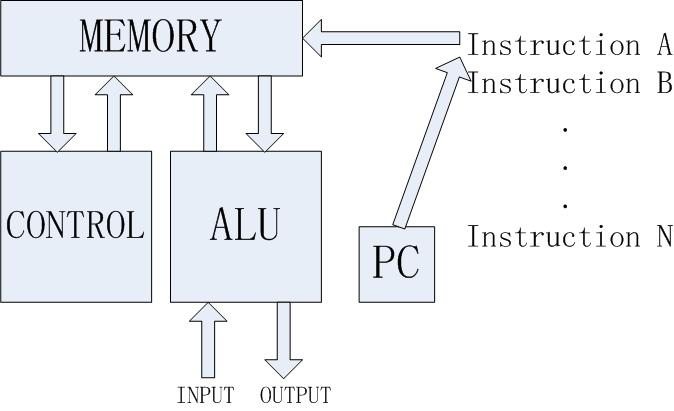
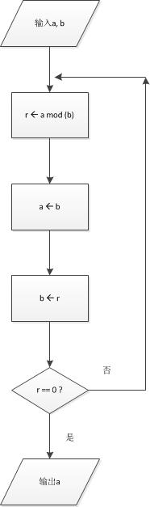

“面向对象程序设计与python语言”讲义
Table of Contents
- 1. 第一章 安装并搭建环境
- 2. 第二章 基本数据类型
- 3. 第三章 控制流：选择与循环
- 4. 第四章 高级数据类型
- 5. 第五章 抽象－－函数
- 6. 第六章 抽象－－对象
- 7. 第七章 异常
- 8. 第八章 文件
- 9. 第九章 高级特性
- 10. 第十章 实验课程
1 第一章 安装并搭建环境
1.1 python版本
- python版本有两个系列,2.x与3.x,不兼容
- python倒计时
- 学习、使用选择3.x
- 查看python版本
import sys sys.version # sys.winver sys.version_info
1.2 安装
1.2.1 windows
Anaconda Suite for Windows,下载地址: https://www.anaconda.com
1.2.2 linux
- 绝大部分Linux发行版自带Python2。使用python3需另安装。
- 安装Anaconda Suite for Linux，不用操心版本、扩展库兼容问题。
- 安装指南：How to Install anaconda in ubuntu 16.04
1.2.3 虚拟环境
- pyvenv – A tool to create isolated virtual environments from a Python
interpreter. Ships with Python from 3.4. https://docs.python.org/3/library/venv.html
- virtualenv – Creates virtual environments, available in PyPi. It can
installs different versions of Python interpreters https://pypi.python.org/pypi/virtualenv
- pyenv – 另有一个名字相近的包，切勿混淆。A Python version manager. Installs different versions and flavors of Python interpreters.
1.3 编程环境
- Jupyter Notebook
- IDLE
- command line
- github： 廖雪峰的git教程, 《GitHub入门与实践》
- 记笔记： EverNote, WizNote,
- 协同写实验报告: google doc, 一起写
- 展示代码运行工具： www.pythontutor.com
{kind=link}
1.5 编程话题
1.5.1 编程所学技能
- 计算思维 Computational thinking.1
- 阅读并理解别人的代码 Understand code. Reading code is one of the best way to learn programming, beside writing code.
- 理解计算的能与不能 Understand limits & abilities. Something(not everything) can be computed.
- 解决问题 Map problem into computational solution. 观察、提出问题、 分析问题、提出方案、设计实验、分析结果、解决问题及总结。
1.5.2 编程完成算计computation任务
- 计算只是算计的一方面。 Calculation is just one aspect of computation.算计用于决策。
- 知识分类
- 陈述(描述、说明)式知识 declaritive knowledge
- 有关事实和情况的说明 statement of facts
- 例： 饭店的菜肴介绍，包括配料成分、色香味、照片
- 例： 算术，包括数字，自然数、有理数；算符，加减乘除
- 过程（行动、程序、指令）式知识 imperative(procedure) knowledge
- 有关完成某件工作的一系列步骤（操作）的描述 a description of how to deduce something
- 例： 菜肴的烹制方法和过程，各种相关操作及其执行顺序（例：西红柿 炒蛋）
- 例： 四则运算法则，先乘除后加减
- 用一系列步骤描述 计算过程
- 算计就是刻画过程式知识的方法
- 例： 欧几里德算法又称辗转相除法，用于计算两个整数m, n的最大公约数。其计 算原理依赖于下面的定理：gcd(m, n) = gcd(n, m mod n)。这个定理的意思 是：整数m、n的最大公约数等于n和m除以n的余数的最大公约数。
- 例： 有两个整数：120和45，我们按照上面的方法求他们的最大公约数。
- gcd(120, 45) = gcd(45, 120 % 45) = gcd(45, 30)
- gcd(45, 30) = gcd(30, 45 % 30) = gcd(30, 15)
- gcd(30, 15) = gcd(15, 30 % 15) = gcd(15, 0) = 15
当 m % n 等于零时，即求15和0的最大公约数时，这个循环应该终止，15就 是120和45的最大公约数。
- 刻画的是计算过程，而不是数，或加减乘除应该怎么做
- 编程，将过程式知识，通过计算机程序设计语言，以程序方式表达，并具备可 执行能力
- 陈述(描述、说明)式知识 declaritive knowledge
- 如何执行呢？
- 机械计算机器 Mechanical Computation
- 固定程序计算机 fixed-program computer
- 卡西欧计算器 Casio Calculator
- 计算弹道 The computer designed to compute the trajectory of artillery
- 破解密码 Alan Turing desinged a computer to break the enigma code
- 固定程序计算机只能完成指定任务，无法扩展(extensibility)
- 可编程计算机 Programmable Computer

Figure 1: 可编程计算机执行指令示意
- 编程序
- 编程： 告诉计算机做什么。程序用某种计算机能理解的语言编写算法，输入 计算机，计算机编译或解释执行语言，实现功能。
- 算法： 类似教程、说明、手册、菜谱，详细说明做事步骤。
- 例： 西红柿炒蛋
放入鸡蛋翻炒 放入西红柿 如果 没熟： 继续翻炒 直至熟了，不再翻炒 加盐调味 如果 不入味： 继续加盐 直至口感合适 出锅盛盘
- 该算法包含成分ingredients(object, things)，如鸡蛋、西红柿、盐，代表被操作的数据，及指 令(instructions, statement)，如放入、翻炒、加盐、出锅，代表操作动作。
- 例:欧几里得法

Figure 2: 欧几里得算法流程图
- 算法、程序可修改,即可编程(programmable).If you don't like something, change it.
- 尤其在自由软件（Free software）、开源（Open source）、社会化编程 （Social programming）影响下，获得、学习、改进开源程序成为风尚。
1.5.3 计算机程序设计语言
- 1936年，Alan Turing认为用6条基本指令，一切都可以解决。由此推论，只要 能在一种语言中实现，就能在另一种语言中实现。 C中能实现的没有Fortran 不能实现的。称这为“图灵兼容”(Turing compatible)。
- 语言即工具。图灵兼容意义上无差别，实际使用中分高下。每种语言有其特别 适用处。
- 语言分类
- 高级语言 high level vs. 低级语言 low level（与机器语言的远近）
- 通用 general vs. 专用 targeted
- 编译型 compiled vs. 解释型 interpreted
- 按编程范式(paradigm)分
- 过程式 procedure-oriented paradigm(structured programming): c
- 面向对象 object-oriented programming: java, python, c#
- 函数式 functional programming: Lisp, Haskell, Scheme
- Python是通用解释型高级语言,混合了过程、面向对象、及函数式编程特征， 主要特征是面向对象。
- 了解编程语言“范式”
Programming language "paradigms" are a moribund and tedious legacy of
a bygone age. Modern language designers pay them no respect, so why
do our courses slavishly adhere to them?
...Python...their designers...borrow features as they wish, creating
melanges that utterly defy characterization.
-- Shriam krishnamurthi, 2008
Everything that is good in Python was stolen from other languages.
-- Guido van Rossum, 2000
1.5.4 简介
- 荷兰人Guido van Rossum（BDFL, Benevolent Dictator For Life）创制 Python，1991年发行第一个公开版本。
1.6 课后阅读
- 访问Python官网
- 阅读《新手指南》
- 阅读《入门指南》
- 访问Anaconda官网
- 了解Anaconda文档
- 阅读 程序流程图编写规范
- 阅读《计算机科学导论》
2 第二章 基本数据类型
- python是面向对象语言，支持面向对象编程。
- 以C语言为代表的结构化编程重点在编写函数或过程，以处理数据。
- 面向对象编程，强调创建既包含数据又包含处理功能的对象。每个对象代表了 真实世界的一个客观事物(object)或概念，其处理功能代表了对象之间的关联 互动。
2.1 万物皆对象
- 对象是python对数据的进行抽象表达的术语。python程序中，所有数据均表示 为对象或对象间的关系。
- 每个对象都有一个唯一标识、属于某个数据类型，有一个值。
Objects are Python’s abstraction for data. All data in a Python
program is represented by objects or by relations between
objects. (In a sense, and in conformance to Von Neumann’s model of
a “stored program computer,” code is also represented by objects.)
Every object has an identity, a type and a value.
-- https://docs.python.org/dev/reference/datamodel.html
- 在Python中所有事物都是对象。数字42是对象，字符串是对象，列表是对象， 函数是对象，模块是对象。每一个对象都有一个数据类型(Data type)，和一 个身份标识符(id)。
- python中，数据类型(Data type)和类(class)本质上是相同的。一般按习惯， 内置的数据类型，称为数据类型，自定义的数据类型，称为类。
type(42) id(42) # 整数是对象 type(42.0), id(42.0) # 浮点数是对象 type('abc'), id('abc') # 字符串是对象 def foo(): pass type(foo), id(foo) # (<class 'function'>, 38110760) # 函数是对象 type(foo.__code__), id(foo.__code__) # (<class 'code'>, 38111680) # 代码是对象
2.1.1 数据类型
- 一个对象的数据类型定义了该对象数据的取值范围，同时规定了该对象可以完 成的动作。
- 事实上,数据类型本身也是对象，它的数据类型就是自身，type。
type(42) # <class 'int'> type(type(42)) # <class 'type'> type(type(type(42))) # <class 'type'>
2.2 字面量
- 字面量是某些内置数据类型常量值的记号(Literals are notations for constant values of some built-in types.)。
- 名－值：名字是记号，值是实体。 1, one, 一是记号，数学概念“1”是实体。
- 重名的“张三”，记号同，实体不同。 名字和学号，记号不同，实体同。
2.3 数字
- 有三种类型的数字字面量（Numeric literals）,亦称数字类型numeric types：
+ 整数 integers
- 浮点数 floating point numbers
- 复数 imaginary numbers
- 注意：数字字面量不含符号，-1不是字面量，而是表达式，具体说，是由操作 符负号（-）和字面量1组成的表达式。
- 还另有两种字面量:字符串字面量和位字面量。
2.3.1 整数
整数精度无限。 Integers have unlimited precision.
- 十进制整数 decimal 0,-1,9,123
- 十六进整制 hexadecimal 0x10, 0xfa
- 八进制整数 octals 0o35
- 二进制整数 0b0101
2.3.2 浮点数
浮点数是实数的近似（不精确）表示。
x = 0.1 print(format(0.1, '.17f'))
0.10000000000000001
- 浮点数的机内存储
- 浮点数机内存储遵循《IEEE 754:floating point standard》，用科学计数法
表示实数。一个浮点数在机器里由两部分组成：
- 尾数 mantissa(significant) 1 ≤ mantissa < 2
- 指数 exponent -1022 < exponent < +1023 表示范围: ±10308
- 现在主流计算机64位:
- 1 bit for sign
- 11 bits for exponent
- 52 bits for mantissa
- 可以精确到17位小数，17 decimal digits。
- 浮点数机内存储遵循《IEEE 754:floating point standard》，用科学计数法
表示实数。一个浮点数在机器里由两部分组成：
- 机内存储释义
- 1/8 = 0.125
- B10: 1.25 * 10(-1)
- B2: 1.0 * 2(-3), (0.001)2
- 1/10 = 0.1
- B10: 1 * 10(-1)
- B2: .00011001100…
- 2(-4) + 2(-5) = 2/32 + 1/32 = 3/32 = 0.9375
- 2(-4) + 2(-5) + 2(-8) + 2(-9) = 1/16 + 1/32 + 1/256 + 1/512 = 0.9960938
- 计算机字长（位数）是有限的，没办法精确表示无限循环二进制小数。 最终 只能舍入到17位小数。
- 所以，浮点数是实数的近似（不精确）表示。
- 1/8 = 0.125
- 奇怪的结果
- 了解浮点数原理，有助于理解程序可能出现的奇怪结果
s = 0.0 for i in range(10): s += 0.1 # print(s) print(('%.17f') % s) # range([start,]stop[,step]) # 如何查看一个函数，当然是求助啦！ help(range)
0.99999999999999989
import math a = math.sqrt(2) print(a * a == 2) print(abs(a * a - 2.0) < 0.00001)
False True
- 避免用很小的小数做除数，避免两个相近的浮点数相减、相除，那样会损失精 度，造成结果失真。
- 科学计算和数值分析，一般不直接用python原生功能，而应import numpy使用 专用数值计算API。
2.3.3 复数
- python 支持复数运算
a = 3 + 4j b = 5 + 6j c = a + b
2.4 运算符
- 数字称为算子operand，参与运算的数，被操作的数
- 运算符operator就是运算的方式，操作的动作。
# 数字运算符，按优先级升序排序 53672+ 235253 10 - 3 10 * 3 10 / 3 # 真除法 10 // 3 # 求整商 -3 10 % 3 abs(-10) int(10.3) float(10) complex(10, 3) divmod(10,3) # the pair(10 // 3, 10 % 3) pow(10,3) x ** y -3 ** 2 (-3) ** 2 # 关系运算符 10 < 3 10 <= 3 10 > 3 10 >= 3 10 == 3 10 != 3 # 逻辑（布尔）运算符 x = True y = False x or y x and y not x # 成员测试运算符 membership 'a' in ('a','b') # 对象同一测试（地址） p = None q = None p is q a = 2 b = 2 c = 2.0 a is b a is c b is not c # 集合运算符 交集& 并集| 对称差集^ # 位运算符 | ^ & << >> ~
2.5 初识字符串
- 字符串(strings)，是不可变字符序列(sequence)，和数字一样，是值，以单、双、三引号作为界定符。
- 三引号字符串可以跨行
- 字符串可以连接 concatenation "Hello, " + "world!"
- str()将值转为字符串string
- input()接受用户输入的字符
- 在python3中，字符串以Unicode编码
- The principal built-int types are numerics, sequences, mappings, classes, instances and exceptions.
2.5.1 字符的转义 escape
- 转义符\。有一种字符串称为原生字符串(raw stings)，原生字符串前缀r，忽 视转义符，原样输出字符串中的字符。原生字符串简化某些繁琐的转义。
print('Hello, \nworld!') path = 'c:\nowhere' print(path) cpath = 'c:\\program files\\fnord\\foo\\bar\\baz\\frozz\\bozz' print(cpath) # 使用raw string可简化此种繁琐的转义， 原生字符串中字符照原样输出 print(r'c:\nowhere') rpath = r'c:\program files\fnord\foo\bar\baz\frozz\bozz' print(rpath) print(r'Let\'s go!') # 原生字符串中\没有转义，原样显示。 # print(r'This is illegal\') # 此句非法 print(r'c:\program files\foo\bar''\\')
2.6 变量
- 变量(variables)是一个指代某值(目前：数字、字符串)的名字
- 变量最常见操作x = 3，称为赋值assignment或绑定binding
- 将变量赋予值后，可用变量代替值参与运算: 10 + x
- 变量优势在于可以在不关心其值的情况下，令其参与运算。
- python不需要事先声明变量名及类型，赋值、绑定即声明，python解释器根据 赋值或运算推断变量类型
- 先赋值后使用
- 允许多个变量指向同一个值
- 变量/值，名/实
- 某人张三，可以两名指此人（张三、老张、那人，或化名李四）
- 不可一名指两人（重名,歧义，二义性），消歧，增加命名空间namespace、 或域scope。1班张三，2班张三。
- x人行必有我师， y人成虎, 桃园z结义
- 变量命名规则
- 变量以字母或下划线开头，下划线开头变量在python中有特定含义
- 变量中不能有空格及常用标点符号
- 不能使用关键字作为变量名
- 建议不要使用系统内置的模块名、类型名、函数名及已导入的模块名及其成 员名，预防重名引起的混淆
- 变量区分大小写case sensitive
import keyword # python关键字 print(keyword.kwlist)
['and', 'as', 'assert', 'break', 'class', 'continue', 'def', 'del', 'elif', 'else', 'except', 'exec', 'finally', 'for', 'from', 'global', 'if', 'import', 'in', 'is', 'lambda', 'not', 'or', 'pass', 'print', 'raise', 'return', 'try', 'while', 'with', 'yield']
dir(__builtins__)
2.7 表达式和语句
- 直观理解， expression = operands + operators 表达式expression由算子 和算符组合构成。
- An expression is something. 表达式是某值，可以求值(evaluate)2 + 2， 此表达式值为4，若设x = 2,表达式 x * 3值为6。
- A statement does something. x = 2是语句。 语句是python解释器可以执行 的合法指令。语句做某些事情，改变某些情况, 如此语句执行后，变量x被绑 定到2这个值上。
- 目前接触到两个语句
- 赋值
- import
- print在python2中是语句，在python3中是函数。
2.7.1 python独特赋值语句
2.7.2 介绍两个语句
- pass
- 什么也不做。作用是占位。
- 例：
if name =='Adam': print('Hello') elif name = 'Bob': # Not finished yet...to be continued elif name = 'Charlie': print('Access Denied')
- 这样的代码无法调试，更不会运行，因在python中空语句块非法。因此，常用 技巧是，用pass占那个空语句块的位置，先让程序运行起来。
if name =='Adam': print('Hello') elif name = 'Bob': # Not finished yet...to be continued pass elif name = 'Charlie': print('Access Denied')
- del
- 删除对象
x = 1 del x x x = ['Hello', 'world'] y = x y[1] = 'Python' x del x y
- del仅删除名name, 而没删除值value。程序无法删除值。当值没有用时， python解释器会自动回收释放没用的值。
- garbage collection
- reference count
2.8 初识函数和模块
2.8.1 函数
- 一个函数( functions)就是一小段程序，执行特定功能。
- python自带大量函数可完成许多工作，另有数量庞大的第三方工具包提供了 更多的函数
- 如果这些还不够用，程序员可以编写自己的函数完成特定的工作
- Python自带的标准函数称为内置(built-in)函数。
- 例： 2 ** 3 可用pow(2,3)函数代替
- 使用函数的方法是调用(calling, invoke)函数，调用函数同时提供参数
(parameters),得到返回值(return value)。
- pow(2, 3),2、3是传递给函数的参数，8是返回值。
- print(x)返回值就是输出内容
- 由于函数返回值，因此函数是一种表达式，可以将函数调用语句和运算符组合， 创建功能更丰富的表达式。 10 + pow(2, 3*5) / 3.0
2.8.2 模块 modules
- 对于非内置函数，使用import语句引入模块，通过语法格式module.function 使用特定函数。
# import 用法： # 1. import math print(math.floor(32.9)) # 2. from math import sqrt # 3. from math import * print(sqrt(9)) # print(sqrt(-1)) # 4. import cmath as cm print(cm.sqrt(-1)) # 5. wield usage # kind of binding from math import sqrt as st1 from xmath import sqrt as st2
- 自定义模块可有绝对引入 (absolute import) 和相对引入 (relative
import)。
- import ecommerce.products
- from .database import Database
- from ..database import Database
2.9 小结
- 需掌握的概念Concepts: Numbers, Strings, Variables, Operator, Operand, Expressions, Statements, Functions, Modules, Assignment, binding,import
3 第三章 控制流：选择与循环
3.1 python代码风格
def fibs(num): """ This is a Fibnacci function """ result = [0, 1] for i in range(num-2): result.append(result[-2] + result[-1]) return result # This is a comment
- python有几个突出特点：
- 不使用分号（;）做语句结束符
- 不使用成对花括号({})作为边界符， 而是使用缩进(Indentation)，一般是 4个空格（不推荐1个tab），界定语句块。 写程序就好像语文作文 (literate programming)一样。
- 不要忽略冒号(:)
- # 为注释符
- 或曰：写程序就是填空。
def 函数名(参数列表):
"""
docstring： 函数说明，说明函数功能，使用何种算法，参数个数、类型，返回值等。
"""
# 注释
代码块（函数体）
1. 输入 input
2. 处理
3. 输出
return 返回值
3.2 语句块
- 块(block)是一组语句,当条件表达式值为“真”时执行，或在循环中执行若干次。
- 冒号表明语句块起点，缩进界定语句块，所有连续、同缩进格式的语句属于同 一个语句块。
3.3 条件表达式
- python中，单个常量、变量或任意合法表达式都可作为条件表达式，而条件表 达式与运算符组合形成更复杂的条件表达式。由此，几乎所有python合法表达 式都可以作为条件表达式。 这些表达式的值就是条件表达式的值。
- 条件表达式值必居其一:
- “假”： Fasle, 0, 0.0, 0j, None, 空列表[],空元组(),空集合，空字典{}， 空字符串''，空range或其他空iterable对象
- “真”: 其他
- 程序可以根据条件表达式的值，决定是否执行某个语句块。
3.3.1 条件表达式的组合
- ((a > 10) and < (a < 20))
- 组合后，其值依然“真”、“假”必居其一。
3.3.2 辨析 == 和 is
- == 相等运算符 the euqality operator
- is 同一运算符 the identity operator， 似乎与==相类，注意区别。
print("foo" == "foo") print("foo" == "bar") x = y = [1, 2, 3] z = [1, 2, 3] x == y x == z x is y x is z
- is 判断的是同一性(identity)，而不是（值）相等性(equality)。 x和y被绑 定到同一列表，z被绑定到另一个列表，该列表恰与xy列表值相等。 尽管值等， 但z与xy不是同一对象。
- xy与z代表的列表相等equal， 但不同non-identical。
- 用法： 用==判断两个对象值是否相等，用is判断两个对象是否同一identical。
- 在CPython实现中，python的identical指x、y存储了同一个对象的内存地址。
3.4 分支结构（选择结构）
3.4.1 单分支
if 表达式：
语句块
# x = input('Input two integers:') x = (3, 10) # x = (10, 3) a, b = x # unpacking if a > b: a, b = b,a print(a,b) name = input('What is your name?') if name.endswith('Michael'): print("Hello, Mr. Michael")
3.4.2 双分支
if 表达式：
语句块1
else: # else clauses
语句块2
name = input('What is your name?') # name = 'c' if name.endswith('Michael'): print("Hello, Mr. Michael") else: print("Hello, stranger") chTest = ['1', '2', '3', '4', '5'] a = '6' if a in chTest: # if a not in chTest: print(a) else: print(chTest)
3.4.3 多分支
- 如果需要检查多条件需要用到elif子句。
if 表达式1：
语句块1
elif 表达式2: # elif clauses
语句块2
elif 表达式3:
:
:
:
else:
语句块n
- python 不支持switch case关键字，多分支结构用if..elif..else代替。
num = int(input('Enter a number: ')) if num > 0: print('The number is positive') elif num < 0: print('The number is negative') else: print('The number is zero')
3.4.4 分支嵌套
if 表达式1：
语句块1
if 表达式2:
语句块2
else:
语句块3
else:
if 表达式4:
语句块4
- 使用嵌套结构一定严格、清晰控制不同级别语句块的缩进量，缩进量决定着语 句块的从属关系，影响着程序的执行路径和逻辑功能。
name = input('What is your name?') # name = 'c' if name.endswith('Adam): if name.startswith('Mr.'): print("Hello, Mr. Adam") elif name.startswith('Mrs.'): print("Hello, Mrs. Adam") else: print("Hello, Adam") else: print("Hello, stranger")
3.4.5 断言 assertions
- assert语句断言某表达式（通常是布尔表达式）为真，并附言解释为何如此。 当该表达式为假时，assert爆出异常，并终止程序。
- assert逻辑上等价于if not condition，用于测试。
age = 10 assert 0 < age < 100 age = -1 assert 0 < age < 100, 'Age is between 0 and 100.' # if not 0<age<100 then raise exception '...'
3.5 循环
3.5.1 while
x = 1 while x <= 100: print(x) x += 1 name = '' while not name: name = input('Please enter your name: ') print('Hello, %s!' % name)
3.5.2 for
- python风格for循环： for var in iterable/range
words = ['this', 'is', 'an', 'ex', 'parrot'] for word in words: print(word) numbers = [0, 1, 2, 3, 4, 5, 6, 7, 8, 9] for number in numbers: print(number) for number in range(1, 101): # This is more compact than the while loop above. # 代替 for (i=1, i <=100, i++) print(number)
3.5.3 break和continue
- 用break语句,退出当前循环,使得整个循环提前结束
- 用continue语句，终止本次循环，忽略continue之后的所有语句，直接回到循 环顶端，提前进入下一次循环
i = 1 while i < 10: i += 1 if (i % 2) > 0: # 非偶数时跳过输出 continue print(i) # 输出偶数 i = 1 while Ture: # 无限循环 print(i) # 输出1~10 i += 1 if i > 10: # 大于10跳出循环 break # for reading for n in range(100, 1, -1): for i in range(2, n): if n % i == 0: break else: print(n) break while i < 10: if i % 2 == 0: continue print(i, end=' ') i += 1
- 循环可带else子句
count = 0 while count < 5: print("%d is less than 5." % count) count += 1 else: print("%d is no less than 5." % 5)
3.6 再识python代码风格
3.6.1 阅读：
import this
The Zen of Python, by Tim Peters Beautiful is better than ugly. Explicit is better than implicit. Simple is better than complex. Complex is better than complicated. Flat is better than nested. Sparse is better than dense. Readability counts. Special cases aren't special enough to break the rules. Although practicality beats purity. Errors should never pass silently. Unless explicitly silenced. In the face of ambiguity, refuse the temptation to guess. There should be one-- and preferably only one --obvious way to do it. Although that way may not be obvious at first unless you're Dutch. Now is better than never. Although never is often better than *right* now. If the implementation is hard to explain, it's a bad idea. If the implementation is easy to explain, it may be a good idea. Namespaces are one honking great idea -- let's do more of those!
3.6.2 课后自学
3.7 课上练习
- 阅读并理解代码。
# excercise 1. # 计算1 + 2 + 3 + ... + 100的值 s = 0 for i in range(1, 101): s = s + i print(s) print(sum(range(1, 101))) # excercise 2. # 求1-100间能同时被7整除，不能被5整除的所有整数 # 那同时能被7和5整除的整数呢？ for i in range(1, 101): if ((i % 7) == 0) and ((i % 5) != 0): print(i) # excercise 3. # 水仙花数输出“水仙花数”，所谓水仙花数，指3位十进制数，其各位数字立方 # 之和等于该数，例如 153 = 1^3 + 5^3 + 3^3 for i in range(100, 1000): ge = i % 10 shi = i // 10 % 10 bai = i // 100 if (ge**3 + shi**3 + bai**3) == i: print(i) # excercise 4. # 求平均分 score = [70, 90, 78, 85, 97, 94, 65, 80] s = 0 for i in score: s += i print(s / len(score)) print(sum(score) / len(score)) # exercise 5. # 输出99乘法表 for i in range(1, 10): for j in range(1,10): if (j<=i): # 调整格式 print(j, '*', i, '=', i*j, ' ', end='') print() # 输出空行 # exercise 6. # 求200以内能被17除的最大正整数 for i in range(200, 0, -1): if (i % 17) == 0: print(i) break # exercise 7. # 判断一个数是否为素数 # 遍历N能否能被从2到sqrt(N)之间的素数整除。若不能则为素数。 import math n = int(input('Input an integer:')) m = math.ceil(math.sqrt(n) + 1) for i in range(2, m): if ((n % i) == 0) and (i < n): print('No') break else: print('Yes') # excercise 8. # 鸡兔同笼问题， 设共有鸡兔30只，查有90只脚，问鸡兔各多少只？ for chick in range(0, 31): if ((2 * chick) + ((30 - chick) * 4)) == 90: print('Chicks:', chick, 'Rabits:', (30 - chick))
3.8 课后作业
- 编写程序，运行后用户输入4为整数年份，判断是否为闰年。 判断闰年算法
如下：
- 如果年份能被400整除，是闰年
- 如果年份能被4整除，但不能被100整除，也是闰年。
- 编写程序，用户从键盘输入小于1000的整数，程序对其进行因式分解。
- 例： 10 = 2 × 5， 60 = 2 × 2 × 3 × 5
- 编写程序，实现分段函数计算，如下表:
| x | y |
| x<0 | 0 |
| 0 ≤ x < 5 | x |
| 5 ≤ x < 10 | 3x-5 |
| 10 ≤ x < 20 | 0.5x-2 |
| 20 ≤ x | 0 |
4 第四章 高级数据类型
4.1 python内置数据类型
- python数据模型 详尽说明了python各种数据类型。
- 数据结构： 按某种方式，将数据元素组织成为有结构（数据元素之间有明确 关系）的数据集合。程序设计语言中的数据结构的类型一般称为数据类型 (Data Type)。
- python主要内置数据类型有：
- 数字，含整数、浮点数、复数
- 序列
- 映射
- 类
- 实例
- 异常
- 亦有不太常用内置数据类型，如集合等。
- python最基本的数据类型是序列(sequence)。序列中每个数据元素都被赋予一 个整数，表示它的位置（亦称索引index)，索引从0开始计数。通过索引可以 访问并使用到该数据元素。
- python3有几种基本内置序列类型：
- 列表 lists
- 元组 tuples
- 字符串 stings
- range objects
- 列表适用范围广，几乎适用于所有情况，元组适用范围要窄一些。
- 除序列外，python还有一种称为映射(mapping)的数据类型。只有一种内置映 射类型: 字典(dictionary)。
4.2 列表
- 当希望使用组合数据时，序列即派上用场。本节以列表为序列例。
= ['ZhangSan', 20] ls = ['LiSi', 19] database = [zs, ls] database
4.2.1 创建与删除列表
- 列表是可改变的 mutable, 即可修改其数据元素。
- 列表以[]为界定符，以,为分隔符
- 使用=将变量赋值给列表即可创建列表对象，事实上，是先创建列表对象， 再将变量绑定到列表
+ 使用list()函数可将其他类型（迭代对象类型iterable）的数据转换为列表
# 创建列表 a_list = ['a','b','mpilgrim','z','example',2018] # 创建列表组合了字符串和数字。 b_list = [] # 创建空列表，空列表作为条件表达式，其值为False # 使用列表作为条件表达式，用于程序分支结构 if b_list: print('True') else: print('False') # 使用list()创建列表 c_list = list((3, 5, 7, 9, 11)) # 将元组对象转换为列表对象 d_list = list(range(1, 10, 2)) # 将range对象转换为列表 e_list = list('hello, world!') # 将字符串转换为列表 f_list = list() # 创建空列表 # 解绑变量，同时删除对象 del a_list # 删除列表绑定的变量，如果该变量指向的列表对象没有绑定其他 # 变量，将同时删除列表对象。 a_list # 报错 NameError: name 'a_list' is not defined，报错内容为名字 # 不存在，没说列表不存在，意指a_list没有绑定任何值。 # 解绑变量，而没有删除对象 g_list = d_list del d_list # 删除变量 d_list g_list # 由于g_list与该列表对象绑定，因此，d_list变量解绑删除了 # 该列表对象没有删除，通过g_list依然可以访问使用
4.2.2 常用序列操作
- 这些操作适用于所有序列，当然适用于列表和字符串。
- 索引
- 切片
- 增加
- 倍增
- 归属
- 索引 Indexing
- 序列中所有元素都索引编号，从0起始。
- 使用元素的索引编号，取得元素值,称为索引。索引可以取负值。
greeting = 'hello' greeting[0] greeting[-1] a_list = [3, 4, 5, 7] a_list[4] # out of range
- 切片 Slicing
- 使用索引访问单个元素，使用切片可以访问连续数个元素
- 一般使用两个索引，中间一个冒号
- 注意序列从0计数
- 切片第一个索引的元素在，而第二个索引元素不在访问范围内
- 第一个索引位置要在第二个索引前，颠倒了，只能得到空序列。
- 切片可以使用3个数字，第三个称为步长number[0:10:2]
tag = '<a href="http://www.python.org">Python web site</a>' tag[9:30] tag[32:-4] numbers = [1, 2, 3, 4, 5, 6, 7, 8, 9, 10] numbers[3:6] numbers[0:1] numbers[7:10] numbers[-3:-1] numbers[-3:0] numbers[-3:] numbers[:3] numbers[:] # if the leftmost index comes later in the sequence than the second # one, the results is always an empty sequence. # 切片步长 numbers[0:10:1] numbers[0:10:2] numbers[3:6:3] number[::4] number[8:3:-1] numbers[10:0:-2] numbers[0:10:-2] numbers[::-2] numbers[5::-2] numbers[:5:-2]
# print out a date, given year, month, and day as numbers months = [ 'January', 'February', 'March', 'April', 'May', 'June', 'July', 'August', 'September', 'October', 'November', 'December' ] # A list with one ending for each number form 1 to 31 endings = ['st', 'nd', 'rd'] + 17 * ['th'] \ + ['st', 'nd', 'rd'] + 7 * ['th'] \ ['st'] # year = input('Year:') # month = input('Month(1-12):') # day = inpu('Day(1-31):') year = 1974 month = 8 day = 16 month_number = int(month) day_number = int(day) # Remember to substract 1 from month and day to get a correct index month_name = months[month_number - 1] ordinal = str(day) + endings[day_number - 1] print(month_name + ' ' + ordinal + ',' + str(year))
- 增加 Adding
- 用+可以拼接(concatenate)序列。
[1, 2, 3] + [4, 5, 6] 'Hello, ' + 'world!' [1, 2, 3] + 'world!' # TypeError # 注意：尽管列表和字符串都是序列，但不能拼接不同类型的序列。
- 倍增 Multiplication
- 使用*倍增原序列。
'python' * 5 [42] * 10 [None] * 10 # [] 空列表没有值 # None 表示有一个值，这个值意味着“无”
# prints a sentence in a centered "box" of correct width # sentence = input('Input a Sentence:') sentence = 'He is a very naughty boy.' screen_width = 80 text_width = len(sentence) box_width = text_width + 6 left_margin = (screen_width - box_width) // 2 print() print(' ' * left_margin + '+' + '-' * (box_width - 2) + '+') print(' ' * left_margin + '|' + ' ' * text_width + ' |') print(' ' * left_margin + '|' + sentence + ' |') print(' ' * left_margin + '|' + ' ' * text_width + ' |') print(' ' * left_margin + '+' + '-' * (box_width - 2) + '+')
- 归属 Membership
- 使用in检查元素是否在序列中，返回布尔值。
p = 'rw' 'w' in p 'x' in p 'x' not in p # Check a user name and PIN code database = [ ['albert', '1234'], ['dilbert', '4242'], ['smith' '7524'], ['jones', '9843] ] # username = input('User Name: ') # pin = input('PIN code: ') username = 'jones' pin = '9843' if [username, pin] in database: print('Access granted!') else: print('Access denied!')
- 有用的内置函数
numbers = [100, 34, 678] len(numbers) max(numbers) min(numbers) zip() enumerate() reversed(seq) sorted(seq) tuple(seq)
4.2.3 添加、修改、删除列表元素
- 列表作为序列一种，除上面常用操作外，特别之处在于列表可修改(mutable)。
4.2.4 列表方法
- 方法是紧密依附(绑定)某对象的函数。列表函数依附的对象是列表对象。调用方法语 法为：object.method(arguments)
- 列表方法能访问和修改列表内容
- append
lst = [1, 2, 3] lst.append(4) lst
- append方法是所谓“就地改变(change the list in place)”。这意味这，该方
法没有返回一个新的修改过的列表对象，而是直接修改原列表对象。
- 快、节省空间，但丢失了原对象
- append方法是所谓“就地改变(change the list in place)”。这意味这，该方
法没有返回一个新的修改过的列表对象，而是直接修改原列表对象。
- count
- 计算元素出现的次数。
['to', 'be', 'or', 'not', 'to', 'be'].count('to) x = [[1,2], 1, 1, [2, 1, [1, 2]]] x.count(1) x.count([1, 2])
- extend
- extend允许一次增加若干新元素。
- 原列表对象扩展为新列表对象
a = [1, 2, 3] b = [4, 5, 6] a.extend(b) # a被修改了，不再是原来值，因此称为就地修改in place. # 比较 a + b a # a没有改变 a = a + b # 改变了，相当于将a绑定到a + b值 # 可以用切片赋值实现extend功能 a = [1, 2, 3] b = [4, 5, 6] a[len(a):] = b
- index
- index（）方法可以获取指定元素首次出现的下标，若不存在则抛出异常（报 错），即以值求索引
- 与以索引求值互为反操作
knights = ['we', 'are', 'the', 'knights', 'who', 'we','say', 'ni'] knights.index('we') knights.index('herring') knights.index('who') # 对比 knights[4]
- insert
- 将一个对象插入到列表中。
numbers = [1,2,3,4,5,6,7] numbers.insert(3, 'four') numbers # 可以用切片赋值实现insert功能 numbers[3:3] = ['Five'] numbers
- pop
- pop从列表删除一个元素（默认是最后一个），并返回这个元素的值
x = [1, 2, 3] x.pop() x x.pop(0) # 移除指定元素 x
- pop方法是列表方法中唯一一个既修改列表又返回值（非None值）的方法
- pop方法可用于实现栈
- remove
- 删除某值，只删除第一次出现的该元素值
x = ['to', 'be', 'or', 'not', 'to', 'be'] x.remove('be') x # 注意第二个be仍在
- 这种方法称为“就地改变而不返回值(nonreturning in-place changing)”，与 pop正相反，它修改了列表，但不返回值。这种静默修改，不会给出提示，容 易让人忽略列表发生的改变。
- reverse
- 倒转列表
x = [1, 2, 3] x.reverse() x
- sort
- sort方法是就地排序，排序后改变了原列表。与函数sorted对比，sorted是生 成新列表对象。
x = [4, 6, 2, 1, 7, 9] y = x.sort() x y # None # sort 改变了返回值None,a得到的结果是排好序的x和值为None的y x = [4, 6, 2, 1, 7, 9] y = x[:] # 将x的一份拷贝绑定到y，再排序。x保持不变，同时得到排序的x # x[:]是切片操作，创建一份x的拷贝 y.sort() x y # y = x是不行的，这相当于将x,y绑定到同一个列表对象。 y=x y.sort() x y # 另一种保持原列表不变，又得到一个该列表排序结果的方式是使用sorted函数 x y = sorted(x) x y
- 高级排序 advanced sorting
- sort()方法有两个可选参数（optional arguments）: key, reverse。这两个 是关键字参数(key arguments)。设置这两个参数可以改变sort()方法的行为。
x = ['aardvark', 'abalone', 'acme', 'add', 'aerate'] x.sort() # 默认排序，字典序 print(x) x = ['aardvark', 'abalone', 'acme', 'add', 'aerate'] x.sort(key=len) # 将len函数名称赋于参数key，求元素长度，按元素长度升序排序 # high-order function print(x) x = [4, 6, 2, 1, 7, 9] x.sort(reverse=True) # 将布尔值赋于reverse,将列表降序排序 print(x) x = ['aardvark', 'abalone', 'acme', 'add', 'aerate'] x.sort(key=len, reverse=True) # 既指定按长度排序，又指定排序方式为降序 print(x)
4.2.5 列表推导
- 列表是python的workhorse，而在列表技术中，列表推导(list comprehensione，来源于Haskell)是开发应用最多的技术之一
- 列表推导就一个目的：生成列表
- 其技术功能类似循环，又非常简洁，在很多地方替代了循环
# example 1. alist = [x*x for x in range(10)] al = [] for x in range(10): al.append(x*x) # 2. 带条件的列表推导 b_list = [x*x for x in range(10) if x%3 == 0] # 3.生成复合元素的推导 c_list = [(x, y) for x in range(3) for y in range(3)] result = [] for x in range(3): for y in range(3): result.append((x, y)) # 4. 双列表按特定条件表达式组成复合元素列表 girls = ['alice', 'bernice', 'clarice'] boys = ['chris', 'arnold', 'bob'] [b+'+'+g for b in boys for g in girls if b[0]==g[0]] # 5. 嵌套列表平铺 vec = [[1,2,3], [4,5,6], [7,8,9]] [num for elem in vec for num in elem] # 6. 生成100以内所有素数 import math [p for p in range(2, 100) if 0 not in [p%d for d in range(2, int(math.sqrt(p) + 1))]]
- 注意：6的算法尽管紧凑，但可读性差。这种情况下，首选使用循环描述算法， 清晰简洁。因此，并不需要将所有循环都改为列表推导。
4.3 元组
- 元组和列表一样也是序列数据类型，区别之处在于，元组的内容不可改变 (immutable)
- 元组以()为界定符,以逗号(,)为分隔符
- 创建单元素元组，必须元素后加“，”,创建元组的符号中，逗号是关键，仅有 括号不起作用
- tuple unpakcing: x, y, z = 1, 2, 3
- 元组没有类似列表的方法
4.3.1 创建元组
at = ('a',) atu = ('a', 'b', 'mpilgrim', 'z', 'example') autp = () # 空元组 a = (3) a = 3, # 创建单元素元组，必须元素后加“，” # 创建元组的符号中，逗号是关键，仅有括号不起作用 a = 1, 2 # 比较下面两句 3 * (40+2) 3 * (40+2,) print(tuple('abcdefg')) al = [-1 ,-4, 6, 7.5, -2.3, 9, -11] tuple(al) s = tuple del s # 删除元组 # 只能删除元组，不能删除元组元素
4.3.2 元组操作
- 可用索引和切片访问元组元素。
- 元组用途：
+ 可用作映射的键
- 可用作内置函数和方法的返回值
- 元组中数据一旦定义就不允许更改。访问和处理元组速度比列表快， 如果定 义一系列常量值，主要用于遍历元组元素，而不需要对元素进行修改，那么一 般建议使用元组而不用列表
4.3.3 生成器推导式
- generator comprehension生成器推导式与列表推导式非常接近，区别处，生 成器使用圆括号，而不是方括号
- 列表推导式的结果是列表对象
- 生成器推导式的结果却不是列表，也不是元组，而是一个生成器对象
- 生成器是较新的技术
g = ((i+2)**2 for i in range(10)) g tuple(g) list(g) g = ((i+2)**2 for i in range(10)) g.__next__() g.__next__() for i in g: print(i, end='')
4.4 字典
- 序列中每个数据元素都有数字索引编号，可通过索引访问元素。与此形成对比， 映射中数据元素没有数字索引编号，而使用名字（键）作为索引来访问元素
- 字典是映射数据类型。
- 字典是无序的“键：值”对(key：value pairs)集合，要求键值唯一，不重复。 字典键只能由不可修改数据类型(immutable)充任，比如字符串、数字、元组
- 但如果元组的元素是可改变数据类型的元素，比如，元组的元素是列表，那么 这种元组不能充任键
- 列表不能充任键。因为，以可改变类型充任键，意味着键值可以修改，一旦修 改键值，无法保证与字典中的其他键值不冲突，无法保证键值唯一。
4.4.1 字典用场
- 字典的用法是通过查找键，进而查到值
- 变量即保存在由名字：值组成的字典中
a = (1, 2, 3, 4, 5) # 全局变量 b = 'Hello, world.' # 全局变量 def demo(): a = 3 # 局部变量 b = [1, 2, 3] # 局部变量 print('locals:', locals()) print('globals:', globals()) demo()
4.4.2 创建和使用
- 例： 有一本电话簿如下。
names = ['Alice', 'Beth', 'Cecil', 'Dee-Dee', 'Earl'] numbers = ['2341', '9102', '3158', '0142', '5551' ] # 查找某人电话号 numbers[names.index('Cecil')]
- 查找方式看上去很繁琐，人们熟悉的查找方式是用键（名字）找值（电话号）， 形如：phonebook['Cecil']
- 使用字典可以达到这种效果
- 字典的键：值对，称为项(items)。字典由项组成。
- 字典界定符为花括号{}，键值用冒号(：)分隔，项用逗号(，)分隔
- 键必须唯一，值不必唯一
# 创建字典 phonebook = {'Alice': '2341', 'Beth':'9102', 'Cecil': '3258', 'Dee-Dee': '0142', 'Earl': '5551'} # 查找某人电话号 phonebook['Cecil']
4.4.3 字典操作
- len(d) 返回项个数
- d[k] 返回键k对应的值
- d[k] = v 将值v与键k对应起来。
- del d[k] 根据键k删除项
- k in d 检查以k为键的项是否归属与字典d
- 字典与列表区别：
- 字典的键不必是整数，可以是任何不可修改类型的数据
- 自动增长，依据键给项赋值时，只要字典中尚没有该键，python会自动给字 典创建一项。列表，如果超出索引范围，无法赋值
- 字典归属操作，查找的是键，而非值。列表归属操作v in l查找的是列表的 值，而不是列表的索引编号
# 自动增长示例 x = [] x[42] = 'Foobar' # IndexError x = {} x[42] = 'Foobar' x
# A simple database people = { 'Alice': { 'phone': '2341', 'addr': 'Foo drive 23' }, 'Beth': { 'phone': '9102', 'addr': 'Bar street 42' }, 'Cecil': { 'phone': '3158', 'addr': 'Baz avenue 90' } } labels = { 'phone': 'phone number', 'addr': 'address' } # name = input('Name:') name = 'Cecil' request = input('Phone number(p) or address(a)?') if request == 'p': key = 'phone' if request == 'a': key = 'addr' if name in people: print("%s's %s is %s." % (name, labels[key], people[name][key]))
4.4.4 字典方法
- 讲几个，余下自学。
- clear
- 清除所有字典项。这是个就地(in-place)操作，返回None
- 比较下面的例子
# example 1. d = {} d['name'] = 'Adam' d['age'] = 39 print(d) rv = d.clear() print(rv) # example 2. # first scenario x = {} y = x x['key'] = 'value' y x = {} y # second scenario x = {} y = x x['key'] = 'value' y x.clear() y
- 如果目的是删除字典的所有项，必须使用clear方法。
- copy
- 浅复制(shallow copy),原复件不同，值却相同
x = {'usrname':'admin', 'machines':['foo', 'bar', 'baz']} y = x.copy() y['username'] = 'mlh' y['machine'].remove('bar') y x
- 如果替换复件中的值，原件不受影响，如username。如果修改值（就地修改， 而非替换），则原件受影响，如machines。因为他们的值存储在同一个位置
- 避免出现浅复制问题的办法是进行深复制(deep copy)， 拷贝值，同时拷贝值 里面嵌套包含的值
- copy模块中的deepcopy函数完成深复制任务
from copy import deepcopy d = {} d['names'] = ['Albert', 'Bob'] c = d.copy(d) dc = deepcopy(d) d['name'].append('Clive') c dc
- fromkeys
- fromkeys根据给定的键，创建新字典，这些键对应的值默认均为None
{}.fromkeys(['name', 'age']) dict.fromkeys(['name', 'age']) # 提供自定义默认值 dict.fromkeys(['name', 'age'], '(unknown)')
- get
- get是访问字典项的方法，它的特点是忽视错误(forgiving way)
- 一般，如果访问的项不在字典里，会报错。而get方法不报错，还可以自定义错误提示
d = {} print(d['name']) # KeyError print(d.get('name')) # No exception print(d.get('name', 'N/A')) # 提供自定义错误提示语 d['name'] = 'Eric' d.get('name') # 项在字典中，正常访问
- 上个程序的修改版本
# A simple database people = { 'Alice': { 'phone': '2341', 'addr': 'Foo drive 23' }, 'Beth': { 'phone': '9102', 'addr': 'Bar street 42' }, 'Cecil': { 'phone': '3158', 'addr': 'Baz avenue 90' } } labels = { 'phone': 'phone number', 'addr': 'address' } # name = input('Name:') name = 'Cecil' request = input('Phone number(p) or address(a)?') if request == 'p': key = 'phone' if request == 'a': key = 'addr' #### # Use get to provide default values: person = people.get(name, {}) label = labels.get(key, key) result = person.get(key, 'not available') if name in people: print("%s's %s is %s." % (name, label, result))
- haskey
- haskey方法检查字典中是否有某个键。 d.haskey(k) 等价于k in d
- 面对多个方法、函数、编程方式可用时，选用适用即可
- 学多种实现方式是为了读懂别人的代码
- 当其他程序员使用按他们兴趣选出的方法、函数，我们能通过读懂代码，理解 他们的意图
d = {} d.has_key('name') d['name'] = 'Eric' d.has_key('name')
- items and iteritems
- items返回一个列表，该列表包含字典所有项，返回值没有特定顺序
d = { 'title': 'Python Web Site', 'usl': 'http://www.python.org', 'spam': 0 } d.items() # iteritems方法功能基本相同，只不过返回值不是列表，而是循环对象(iterator)。 it = d.iteritem() it list(it) # 将itertor转换为list
- keys and iterkeys
- keys返回一个列表，列表内包含字典的键。iterkeys返回包含字典键的 iterator
- pop
- pop根据键返回对应的值，同时从字典中删除该项
d = {'x':1, 'y':2} d.pop('x') d
- popitem
- popitem从字典中弹出一个值，与list.pop不同处，popitem弹出的值，没有特 定顺序，随意弹出字典一个项
- 如果想逐一弹出并处理字典项， popitem正当此用
d = { 'title': 'Python Web Site', 'usl': 'http://www.python.org', 'spam': 0 } d.popitem() d
- setdefault
- setdefault从字典中据键取值，当键在字典中不存在时，setdefault可以给该 键一个默认值
d = {} d.setdefault('name', 'N/A') d d['name'] = 'Gumby' d.setdefault('name', 'N/A') d
- update
- update根据键更新字典值
d = { 'title': 'Python Web Site', 'usl': 'http://www.python.org', 'changed': 'Jan 30 11:15:15 Met 2018' } x = {'title': 'Python Language Website'} d.update(x) d
- values and itervalues
- values返回一个列表， 列表包含字典的值
- itervalues返回包含值的iterator
d = {} d[1] = 1 d[2] = 2 d[3] = 3 d[4] = 1 d.values()
4.5 集合
- 集合中元素是无序的，且元素不重复，唯一
- 使用花括号{}做界定符
4.5.1 创建、修改、删除
a = {3, 5} # 创建集合 aset = set(range(8, 14)) # 用set()创建集合 bset = set([0, 1, 2, 3, 0, 1, 2, 3, 7, 8]) # 如果原来数据中存在重复元 # 素，转为集合时只保留一个 c = set() # 创建空集合 a = {1, 4, 2, 3} a.pop() # 弹出元素 a.add(7) # 添加元素 a.remove(3) # 删除指定元素 a.clear() # 清空集合元素 del a # 删除集合对象
4.5.2 集合操作
- 集合支持交、并、差集等运算
a = set([8, 9, 10, 11, 12, 13]) b = set([0, 1, 2, 3, 7, 8]) a | b # 并集 a.union(b) # 并集 a & b # 交集 a.intersection(b) # 交集 a.difference(b) # 差集 a.symmetric_difference(b) # 对称差集 x = {1, 2, 3} y = {1, 2, 5} z = {1, 2, 3, 4} # 比较集合大小 x < y x < z y < z # 测试是否为子集 x.issubset(y) x.issubset(z) a = set([8, 9, 10, 11, 12, 13]) b = set([0, 1, 2, 3, 7, 8]) a | b a.union(b) a & b a.intersection(b) a.difference(b) a.symmetric_difference(b) x = {1, 2, 3} y = {1, 2, 5} z = {1, 2, 3, 4} x < y x < z y < z x.issubset(y) s.issubset(z)
- 应用例子，取100个介于0-9999之间的随机数。
from random import randint listRandom = [randint(0, 9999) for i range(100)] noRepeat = [] for i in listRandom: if i not in noRepeat: noRepeat.append(i) len(listRandom) len(noRepeat) # 如果用集合，一行代码即可 newSet = set(listRandom)
4.6 再识字符串
- 字符串是不可修改序列数据类型。Strings are immutable sequence of Unicode points.
4.6.1 基本操作
- 所有序列操作索引、切片、倍增、归属、求长度、最大、最小值等均适用于字 符串。因为字符串是不可修改类型，所有赋值操作均不适用。
website = 'http://www.python.org' website[-3:] = 'com' # Type error
4.6.2 字符串的格式化
- 传统方式
- 字符串格式化适用格式化操作符， 百分号(%)
- 百分号左侧放待格式化字符串，右侧，放置待格式化的值
- 值可以是单个值，如字符串、数字，也可以是元组和字典
- 元组最常用
format = "Hello, %s. %s enough for ya?" values = ('world', 'Hot') print(format % values)
- %s是格式字符，常见如%d, %e, %f, %%等。
s = "Pi with three decimals: %.3f" from math import pi print(s % pi)
- %s部分称为转换部分(conversion specifiers)。完整的转换部分包括5个成分，
其成分顺序对输出字符串有决定影响。
- % 标识转换部分开始
- 转换标志flag
- 表示左对齐
- 表示数值带符号
- 最小宽度
- .精度
- 转换类型
- 例:
'Price of eggs: $%d' % 42 'Hexadecimal price of eggs: %x' % 42 from math import pi 'Pi: %f...' % pi 'Very inexact estimate of pi: %i' % pi # 带符号整数%i, %d 'Using str: %s' % 42 '%10f' % pi # 宽度10 '%10.2f' % pi # 宽度10，精度2位小数 '%.2f' % pi # 默认宽度，精度2位小数 '%.5s' % 'Guido van Rossum' # 可以使用 * 作为宽度、精度或a兼有，带*情况下，该值从元组中读取 '%.*s' % (5, 'Guido van Rossum) '010.2f' % pi #宽度精度值前，可置flag，取0,-,+或空格。0表示用0占位 '%-10.2f' % pi # - 表示左对齐 print(('% 5d' %10) + '\n' + ('% 5d' % -10)) # 正数前置一空格，以便与负数对齐 print(('%+5d' %10) + '\n' + ('%+5d' % -10)) # +表示正数带正号
- 综合例子,自行阅读理解
# print a formatted price list with a given width width = int(input('Please enter width: ')) price_width = 10 item_width = width - price_width header_format = '%-*s%*s' format = '%-*s%*.2f' print('=' * width) print(header_format % (item_width, 'Item', price_width, 'Price')) print('-' * width) print(format % (item_width, 'Apples', price_width, 0.4)) print(format % (item_width, 'Pears', price_width, 0.5)) print(format % (item_width, 'Cantaloupes', price_width, 1.92)) print(format % (item_width, 'Dried Apricots (16 oz.)', price_width, 8)) print(format % (item_width, 'Prunes (4 libs.)', price_width, 12)) print('=' * width)
- 字符串格式化适用格式化操作符， 百分号(%)
- 新方式
- 目前，python社区推荐使用str.format()方法格式化字符串
- 该方法使用{}和:，代替传统的%，格式化字符串
- 该方法可以使用位置、参数名字格式化，支持序列解包等
# 例子取自 https://docs.python.org/3.6/library/string.html#template-strings # 根据位置格式化 '{0}, {1}, {2}'.format('a', 'b', 'c') '{}, {}, {}'.format('a', 'b', 'c') # 3.1+ only '{2}, {1}, {0}'.format('a', 'b', 'c') '{2}, {1}, {0}'.format(*'abc') # unpacking argument sequence '{0}{1}{0}'.format('abra', 'cad') # arguments' indices can be repeated # 根据参数名字格式化 'Coordinates: {latitude}, {longitude}'.format(latitude='37.24N', longitude='-115.81W') coord = {'latitude': '37.24N', 'longitude': '-115.81W'} 'Coordinates: {latitude}, {longitude}'.format(**coord) # 格式化参数属性 c = 3-5j ('The complex number {0} is formed from the real part {0.real} ' 'and the imaginary part {0.imag}.').format(c) class Point: def __init__(self, x, y): self.x, self.y = x, y def __str__(self): return 'Point({self.x}, {self.y})'.format(self=self) str(Point(4, 2)) # 格式化参数元素 coord = (3, 5) 'X: {0[0]}; Y: {0[1]}'.format(coord) # 显示字符串 "repr() shows quotes: {!r}; str() doesn't: {!s}".format('test1', 'test2') # 对齐文本，指定宽度 '{:<30}'.format('left aligned') '{:>30}'.format('right aligned') '{:^30}'.format('centered') '{:*^30}'.format('centered') # use '*' as a fill char # 显示浮点数、符号 '{:+f}; {:+f}'.format(3.14, -3.14) # show it always '{: f}; {: f}'.format(3.14, -3.14) # show a space for positive numbers '{:-f}; {:-f}'.format(3.14, -3.14) # show only the minus -- same as '{:f}; {:f}' # 使用,作为千分位分位符 '{:,}'.format(1234567890) # 显示日期 import datetime d = datetime.datetime(2010, 7, 4, 12, 15, 58) '{:%Y-%m-%d %H:%M:%S}'.format(d)
- 字典的格式化
- phonebook = {'Alice': '2341', 'Beth':'9102', 'Cecil': '3258', 'Dee-Dee': '0142', 'Earl': '5551'}
- print("Cecil's phone number is %(Cecil)s." % phonebook)
4.6.3 字符串方法
- 字符串的方法比列表方法更丰富
- 使用格式： object.method(argument)
- find
- 在字符串中查找子字符串，找到返回子串的第一个字符索引，没找到返回-1
'With a moo-moo here, and a moo-moo there'.find('moo') title = 'Monty Python's Flying circus' title.find('Monty) title.find('Flying') title.find('Zirquss')
- 自学: rfind, index, rindex, count, startswith, endswith
- join
- 非常重要的方法，与split互为反操作,连接序列元素
seq = [1, 2, 3, 4, 5] sep = '+' sep.join(seq) # type error seq = ['1', '2', '3', '4', '5'] sep.join(seq) dirs = '', 'usr', 'bin', 'env' '/'.join(dirs) print('C:' + '\\'.join(dirs)) pirnt('\'.join(dirs)) # how about this? ''.join(seq)
- lower
- 返回字符串小写形式
'Trodheim Hammer Dance'.lower() if 'Gumby' in ['gumby', 'smith', 'jone']: print('Found it!') name = 'Gumby' names = ['gumby', 'smith', 'jones'] if name.lower() in names: print ('Found it!')
- 自学: islower, capitalize, swapcase, title, istitle, upper, isupper
- replace
- 替换字符串。
'This is a test'.replace('is', 'eez')
- 自学: translate, expandtabs
- split
- 非常重要方法，与join互为反操作，将字符串分割为序列
'1+2+3+4+5'.split('+') # 指定分割符 '/usr/bin/env'.split('/') # 指定分割符 'Using the defalut'.split() # 默认分隔符是空白(whitespace, 包括spaces, tabs, newlines)
- 自学: rsplit, splitlines
- strip
- 清除字符串左端和右端空白，或指定字符
- 仅清除两端，字符串中间的空白或字符不受影响
'internal whitespace is kept '.strip() '*** SPAM * for * every one!!!***'.strip('*!') # 指定清除的字符
- 自学: lstrip, rstrip
4.7 其他高级数据结构
- 堆 import heapq
- 队列 import Queue
- 栈和链表， 用列表模拟
- 其他高级数据类型 import collectoins容器类型。
5 第五章 抽象－－函数
- 本章学习如何将语句组织成函数
- 函数作用，即一次编写，反复使用reuse，避免重复写代码
5.1 缘由
fibs = [0, 1] for i in range(8): fibs.append(fibs[-2] + fibs[-1]) fibs # 可是又想算更多的fib数 fibs [0, 1] num = int(input('How many Fibonacci numbers do you want?')) for i in range(num -2): fibs.append(fibs[-2] + fibs[-1]) print(fibs)
- 代码重复了，每次使用都要重复编写，重复劳动，而且不利于维护
- 对程序员而言：lazyness is virtue。懒是站在巨人肩膀上，不做无谓的重复 工作
- 主要手段：代码重用(reusable)
- SpaceX都重用火箭，可见此概念之有用！
- 我们希望如下，即得结果
num = input(...) print(fibs(num))
5.2 抽象和结构
- 实现代码重用的方式之一是抽象。抽象是使人能理解计算机程序的关键步骤
- 再多的代码，计算机都无所谓，越详细越好，人却不行
- 人必须用抽象，分治的方式降低复杂度
- 比如问路。如果回答：向前走１０步，向左转９０度，走５步，再向右转４ ７度，走１２３步。你会找到路么？
- 一般的回答是：下个路口左转，再个路口右转，直走就到了
- 含义：人知道怎么走，怎么转，走多少，转多少，不清楚的是方向
- 设计程序也应该用这种方式，抽象一点
- 比如，程序完成如下任务：下载网页，统计网页中的词频，输出词与对应的频率。这理解起来很 容易
- 转成python:
page = download_page() freqs = compute_frequencies(page) for word, freq in freqs: print(word, freq)
- 抽象的意义在于，向使用者隐藏所有实现细节，仅提供函数签名作为接口（或称：使用协议）
- 函数签名function signature
- 接口（或使用协议）interface(protocol)。python中协议，指控制行为的规则
- 设计程序时，首先告诉计算机做什么，而暂不考虑如何做。如何做要放到另外的地方，函数定义中
- 另一方面，注意，伪码与python语言的转换十分自然流畅
- 函数的结构：顺序、分支、循环
5.3 定义和调用
- 函数设计可以调用的call，调用后，函数执行某些都做，返回值。在python中 可以调用的事物称为可调用的(callable)。函数是典型的callable
- 七个可调用类型Seven callable types:
- user-defined functions
- built-in functions
- built-in methods
- methods
- classes
- Class instances
- Generator functions
import math x = 1 y = math.sqrt # 注意没有括号 x.__call__ # 报错 y.__call__ # 检查是否callable
- 结构化程序设计范式中，最核心的事情就是创建函数和使用函数
- 一般，先写代码结构，再填空。以至于有人说，写程序不难，就是填空
def 函数名(参数列表):
"""
docstring： 函数说明，说明函数功能，使用何种算法，参数个数、类型，返回值等。
"""
# 注释
代码块（函数体）
1. 输入 input
2. 处理
3. 输出
return 返回值
# 函数的定义 def fibs(num): """ 计算斐波那契数列 参数num: 输出数列长度 """ # １．初始化及输入 result = [0, 1] # 2.处理 for i in range(num - 2): result.append(result[-2] + result[-1]) # 3.输出 # 返回值 return result # 函数的调用 fibs(10) fibs(15)
- 写docstring背后的理念叫做：程序文档化，即程序是自解释的 self-explaining。
- 试下面两个命令。
fibs.__doc__ help(fibs)
5.3.1 函数的返回值
- 函数可以返回值，也可以不返回值，或者不写return语句，或仅写return带值
def test(): print('This is printed') return print('This is not') x = test() print(x) # None
- 所有函数都返回值，当什么都不返回时，实际返回的是None值
5.3.2 函数的保存、常见python文件扩展名
- 函数保存到py文件中。
- py: python源文件，文本文件，有解释器解释执行
- pyc: python字节码文件，二进制文件，用于隐藏python源代码和提高运行 速度。python模块第一次被引入时将被编译成字节码文件，以后再次导入 时，优先使用.pyc文件，提高加载和运行模块速度。
- pyw: python源文件，常用于图形界面程序
5.4 形式参数、实际参数、传值调用、引用调用
- 函数定义时圆括号内用逗号分割形式参数(formal parameters)列表
- 函数调用时，调用者向函数传递实际参数(actual parameters or arguments)
- 函数通过参数从得到外界值
def try_to_change(n): n = 'Mr.Gumby' name = 'Mrs. Entity' try_to_change(name) name
- 同名变量，函数内局部变量屏遮蔽(shadowing)外部的局部变量或全局变量
- 字符串本身是不可改变的，如果以可改变数据做参数会怎样呢？
def change(m): m[0] = 'Mr.Gumby' mlist = ['Mrs. Entity', 'Mrs. Thing'] change(mlist) mlist
- 前例是将值赋予局部变量,类似“传值调用(call by value)”
- 本例是将列表名字(name)，传给变量m,因此m和mlist两个名字，指向的是同一 个值（列表），修改m指向的列表时，mlist自然改变,类似“引用调用(call by reference)”
- python传变量方式call by share
- 思考: 如何将列表传递改为传值调用？
5.5 参数类型
5.5.1 位置参数
- 位置参数 (positional parameters)，位置起重要作用，比参数名字更重要
def hello1(greeting, name): print('%s, %s!' % (greeting, name)) def hello2(name, greeting): print('%s, %s!' % (name, greeting)) def hello3(name, greeting): print('%s, %s!' % (name, greeting)) hello1('hello', 'world') hello2('Hello', 'world')
- 可看出参数名字不甚重要，尽管参数名字不同，这两个函数做的是同一件事
5.5.2 关键字参数
- 当参数过多时，容易记错参数的顺序
- 为了简化记忆，可以给参数起名字。所谓关键字参数(keyword parameters), 能明确示意参数功能
- 此时，顺序不重要了，名字重要
hello1(greeting='hEllo', name='world') hello1(name='world',greeting='hEllo') hello2(greeting='heLLo', name='world')
- 比如调用函数，store('Mr. Brainsample', 10, 20, 13, 5)一眼很难看出这 是在做什么。如果写法改成， store(patient='Mr. Brainsample',hour=10,minute=20, day=13, month=5)， 几乎可以猜到该函数完成什么功能了
- 关键字参数真正大放异彩之处，是在函数定义时，可定义参数默认值。
def hello4(name='world', greeting='Hello'): print('%s, %s!' % (name, greeting)) hello4() hello4('Greetings') hello4('Greetings', 'universe')
def hello5(name, greeting='Hello', punctuation='!'): print('%s, %s%s' % (greeting, name, punctuation)) hello5('Mars') hello5('Mars', 'Howdy') hello5('Mars', 'Howdy', '...') hello5('Mars', punctuation='.') hello5('Mars', greeting='Top of the morning to ya') hello5()
- 位置参数和关键字参数可以组合使用，要求，位置参数在前,关键字参数在后
5.5.3 可变长参数
- 有时，允许用户提供任意多的参数也有用武之地
- 比如，store(data, name1, name2, name3)，此种情况应该允许提供任意多的 名字。为此，要在函数定义中使用可变长参数。一个*加一个参数名字
def print_params(*params): print(params) print_params('Testing') print_params(1, 2, 3) # 注意结果是一个元组 def print_params_2(title, *params): print(title) print(params) print_params_2('Params:', 1, 2, 3) print_params_2('Nothing:') # 得到一个空元组
- 一个*表示“把余下所有的位置参数集到一个元组里”
print_params_2('Hmm...', something=42) # TypeError
- *对关键字参数不起作用，需要另外一个操作符，收集所有关键字参数
def print_params_3(**params): print(params) print_params_3(x=1, y=2, z=3) def print_params_4(x, y, z=3, *pospar, **keypar): print(x, y, z) print(pospar) print(keypar) print_params_4(1, 2, 3, 4, 5, 6, 7, foo=1, bar=2) # 能否解释结果？
- **将关键字参数集到一个字典里
5.5.4 反向过程
- **的作用是集起参数，反过程是将集合的参数打散分配(distribute)给变量
def add(x, y): return x + y params = (1, 2) add(*params) # 在调用时，而不是定义时，给参数加*，即可将参数分配给变 # 量。 * 适用于元组、列表 params = {'name': 'Sir Robin', 'greeting': 'Well met'} hello3(**params) # ** 适用于字典 # 定义函数和调用函数，仅一方使用时，才能体现可变参数优势。 # 比较都使用或都不使用，体现不出优势。 def with_stars(**kwds): print(kwds['name'], 'is', kwd['age'], 'years old') def without_stars(kwds): print(kwds['name'], 'is', kwds['age'], 'years old') args = {'name': 'Mr. Adam', 'age': 23} with_stars(**args) without_starts(args)
- 做练习，阅读理解下面代码
def story(**kwds): return 'Once upon a time, there was a ' \ '%(job)s called %(name)s.' % kwds def power(x, y, *others): if others: print('Received redundant parameters:', others) return pow(x,y) def interval(start, stop=None, step=1): 'Imitates range() for step > 0' if stop is None: start, stop = 0, start result = [] i = start while i < stop: result.append(i) i += step return result print(story(job='king', name='Gumby')) print(story(name='Sir Robin', job='brave knight')) params = {'job': 'language', 'name':'Python'} print(story(**params)) del params['job'] params print(story(job='stroke of genius', **params)) power(2, 3), power(3, 2) params = (5,) * 2 print(params) power(*params) power(3,3, 'Hello, World') interval(10), interval(1,5), interval(3, 12, 4) power(*interval(3,7))
5.6 作用域、命名空间
- 变量是什么？ 可以吧变量理解为指向值的名字、标签
- x = 1就好像字典项一样。只不过是一个“无形”字典
- 事实上，内置函数vars，其返回值，就是这个描述变量的“无形”字典
x = 1 scope = vars() scope['x'] scope['x'] += 1 x
- 这种无形的字典称为命名空间(namespace)或作用域(scope)
- 全局空间是一个命名空间，每一个函数调用都会创建一个新的命名空间。
- 所以，函数的局部变量仅在其局部命名空间中起作用
- 传值参数是典型的局部变量
def output(x): x = 42 print(x) x = 1 y = 2 output(y)
- 如果要在函数内访问全局变量怎么办？
def combine(param): print(param + external) external = 'berry' combine('Shrub') # 还可以在函数内重新绑定(rebinding)变量。 x = 1 def change_g(): global x # 默认函数内变量都是局部变量，通过重新绑定，设为全局变量 x = x + 1 change_g() x
- 尽量减少使用全局变量，尽量不要在函数内绑定全局变量
- 频繁使用全局变量是不良编程风格
5.6.1 递归
- 函数可以调用其他函数。而且，函数还可以调用自身（函数），调用自身称为 递归。Recursion: referring to yourself.
- 递归关键是识别出两种情况
- 基础情况 A base case 最简单情况，函数直接返回值
- 递归情况 A recursive case 调用自身，但规模问题规模减小了
- 写递归程序步骤：
1． 写出基础情况和递归情况
2． 阅读代码
- 解释代码
- 修改代码
- 阶乘和乘方
- 经典递归例子：阶乘和乘方(Fractorial and Power)
def frac(n): result = n for i in range(1, n): result *= i return result # + base case: the fractorial of 1 is 1 # + recursive case: the fractorial of n greater than 1 is the product of # n and the fractorial of n-1 def frac(n): if n == 1: return 1 else: return n * frac(n-1) print('n in this level is %d' % n) def power(x, n): result = 1 for i in range(n): result *= x return result # + power(x, 0) is 1 for all number x. # + power(x, n) for n > 0 is the product of x and the power(x, n-1) def power(x, n): if n == 0: return 1 else: return x * power(x, n-1)
- 递归程序练习: 二分法
def search(sequence, number, lower=0, upper=None): if upper is None: upper = len(sequence) - 1 if lower == upper: assert number == sequence[upper] return upper else: middle = (lower + upper) // 2 if number > sequence[middle]: return search(sequence, number, middle+1, upper) else: return search(sequence, number, lower, middle) seq = [34, 67, 8, 123, 4, 100, 95] seq.sort() seq search(seq, 34)
5.7 lambda 表达式
- lambda体现了函数式编程范式(functional programming pradigm)风格
- lambda表达式用来声明匿名函数，即不起名，临时使用的小巧函数
- lambda表达式仅可包含一个表达式，不允许复杂语句，可以调用函数，该表达 式计算结果就是返回值
f = lambda x, y, z: x+y+z print(f(1, 2, 3)) # 含有参数默认值 g = lambda x, y=2, 3: x+y+z print(g(1)) # 调用时使用关键字参数 print(g(2, z=4, y=5)) # 留心 L = [(lambda x: x**2), (lambda x: x**3), (lambda x: x**4)] print(L[0](2), L[1](2), L[2](2))
- 注意lambda的变量作用域。总体讲,lambda小巧，但可读性差。有时用好了有奇效
- 最新观点（fluent python）认为，generator expression的引入，会显著减 少lambda的使用
r = [] for x in range(10): r.append(lambda: x**2) # 修改为 r.append(lambda n=x: n**2)即得到预想结果 r[0]() r[1]() # x是在lambda外部作用域定义的，对lambda而言不是局部变量，每次调用都清空原值。 r # r 是lambda表达式的列表，函数式编程的意思，就是evaluate，而不是assignment
- 自学：函数式编程函数，map, filter, reduce
5.8 Batteries Included及自学门径
5.8.1 模块中的函数
- 大家已了解Python基本内容，而python真正强大、吸引人之处在于其内置及海 量的第三方工具包
- https://pypi.python.org/pypi
- 安装python自带（内置built-in）的工具包称为标准库(standard library)，比如 math, cmath。第三发开发的称为第三方库或扩展库(third-party library)
- 任意python程序都能被引入为模块
# hello2.py def hello(): print("Hello world!") import hello2 hello2.hello() # hello()函数命名空间为hello2，所以可以通过其空间引用该函数。
- 这就像重名北京.张三，上海.张三。
import sys # 与安装的python有关的设置 import pprint pprint.pprint(sys.path) sys.path.append('c:/python')
- import hello2
- 模块被引入时基本不做事情，他们主要工作是定义事物，如变量、函数、类等
- 定义只要一次就够了，多次引用一个模块，与引用一次效果相当
- 引入模块后，该模块会保持其作用域，这就是说，该模块中定义的变量、函数、 类自动成为该模块属性hello2.hello()
5.8.2 在模块中加入测试语句
# hello3.py def hello(): print("hello, world!") # a test: hello() # The key to avoiding it is "telling" the module whether it's being run # as a program on its own or being imported into another program. To do # that, you need the variable __name__: # hello4.py # hello4可以独立运行，也可以作为模块被其他引用 def hello(): print("hello world!") def test(): hello() if __name__ == '__main__': test()
5.8.3 自定义模块在哪里
import sys, pprint pprint.pprint(sys.path)
- 一般第三方模块都置入site-packages中，大家可以看看里面都有什么
5.8.4 包
- 当模块多起来时，需要组织成包(package)。包是另一种类型的模块，包的不同之处在于它可以包含其他模块
- 从操作系统视角看，一个模块是一个文件，一个包是一个文件夹
- 一个包能从文件夹变身为python识别的包，它必须包含名为 __init__.py的文件，该文件描述包的内容。
import constants print(constants.PI)
5.8.5 自学模块
- 当遇到一个模块，自己应尽力了解、探索，对模块有个大致掌握。为后续深入 钻研打个基础
- 以copy为例，为了了解copy梗概，我们在解释器提示符(prompt)下，探索该模块
- dir
import copy dir(copy)
- 列出模块中的属性、函数、类、变量等。有些名字带下划线，下划线是作者明 示，按python编程惯例，这些名字不应该在模块外使用
- 即这些名字代表的函数或类是作者自用的，而不是给用户用的
[ n for n in dir(copy) if not n.startswith('_')] # 列表推导式
- __all__
copy.__all__- 会得到一个列表，列出可用函数。与上一个列表推导式基本一致。区别在于， __all__的内容是由作者拟定的
- 去看copy.py里面的__all__变量声明
- 当使用 from copy import * 得到的正式__all__中列出的函数
- 当您自己写模块时，也应在模块中声明__all__变量。明确告诉读者，哪些函数是可 用的，是个好习惯
- help
help(copy.copy)
- help给出的信息，基本够一个程序员正常所需
- __doc__
print(copy.copy.__doc__) # copy的copy函数的__doc__属性
- help一般比doc给出更多关于模块的信息
- Library Reference
- Python Library Reference(for Python 3.5)描述了所有内置库的模块
- 遇到问题，尤其是想了解关于python的具体情况时，基本会在这里找到答案
- __file__
- 真想理解python，真想透彻搞清一个模块，除了阅读源代码，没有其他捷径
- 读python源码是第二有效的学习python的方法。第一有效呢？动手写python代码
- 如何找到源码文件？
print(copy.__file__)
- 到这个文件夹下，直接打开这个文件，开始阅读理解这个模块的工作原理和技 术细节
- 自学以下内置模块
- sys, os, file input, sets, heapq, collections, time, random, shelve,
re
- functools, difflib, hashlib, csv, timeit, profile, trace,
datetime, itertools, logging, getopt and optparse, cmd
- re实现所谓“正则表达式(regular expression)”，用于匹配字符串，而正则表
达式，本身就可以作为一个专题，用一整本书来探究
- 余晟.正则指引.电子工业出版社，2012
- Jeffrey E.F.Friedl著，余晟译.精通正则表达式.电子工业出版社,2012
5.9 NEXT 补充练习例子
- reExample.py
- Mudball.py
6 第六章 抽象－－对象
- python是面向对象语言，即它支持面向对象编程
- 以C语言为代表的过程式编程重点在编写函数或过程，以处理数据
- 面向对象编程，强调创建既包含数据又包含处理功能的对象。每个对象代表了 真实世界的一个客观事物(object)或概念，其处理功能代表了客体之间的关联 互动
6.1 一切皆对象
- 对象是python对数据的进行抽象表达的术语。python程序中，所有数据均表示 为对象或对象间的关系。（这与冯氏“可编程计算机”模型理念一致，而且代码 也是对象）
- 每个对象都有一个唯一标识、属于某个数据类型，有一个值
Objects are Python’s abstraction for data. All data in a Python
program is represented by objects or by relations between
objects. (In a sense, and in conformance to Von Neumann’s model of
a “stored program computer,” code is also represented by objects.)
dEvery object has an identity, a type and a value.
-- https://docs.python.org/dev/reference/datamodel.html
- 因此在Python中所有事物都是对象。列表是对象，42是对象，模块是对象，函 数是对象
def foo(): pass type(foo), id(foo) # (<class 'function'>, 38110760) # 函数是对象 type(foo.__code__), id(foo.__code__) # (<class 'code'>, 38111680) # 代码是对象
6.1.1 数据类型
- 一个对象的数据类型定义了该对象数据的取值范围，同时规定了该对象可以完成的动作。
…An object’s type determines the operations that the object
supports (e.g., “does it have a length?”) and also defines the
possible values for objects of that type.
-- ibid.
- 事实上数据类型本身也是对象，它的数据类型就是自身，type
type(42) # <class 'int'> type(type(42)) # <class 'type'> type(type(type(42))) # <class 'type'>
6.1.2 类
- python中，类就是用户自定义的数据类型。
Essentially, a class is a mechanism Python gives us to create new user-defined types from Python code.
class Joe: pass j = Joe() type(j) <class '__main__.Joe'> type(type(j)) <class 'type'>
- 使用python的语法，及python内置机制，我们创造了一个自定义数据类型Joe。 j是类Joe的实例,意即j是一个对象，它的数据类型是Joe。而类Joe，既是一个 对象，又是一个数据类型。
- 术语“类（class）”和“数据类型（ｔｙｐｅ）”是同一个概念的两个名字。为 防混淆，一般称内置数据类型(built-in type)为数据类型，自定义数据类型
(user-defined type)为类。
- 类提供了将数据和功能组合在一起，成为新数据类型的方法
- 创建一个类，就是创建了某种的对象的新数据类型
- 类的实例有自己的属性，描述实例的状态，代表了类的数据方面；类和类的实 例有自己的方法，能修改其状态，代表了类的行为方面。
6.1.3 实例
- 实例(instance)是对象的同义词。 “实例是某数据类型的对象”(Objects are instances of types)。所以，42是ｉｎｔ数据类型的实例，即42是一个整型对象
- 同理，j是自定义数据类型Joe的一个实例，j是类Joe的一个对象
6.1.4 类的例子
- 定义数学意义上，二维平面上的点Point
- 二维平面中，视点为一个实体（客体object），用横纵坐标定义，如(0, 0)、 (x, y)
- 与点有关的操作有，计算该点到原点距离，计算该点到某点的两点间距离，计 算两点的中点坐标，或该点是否在某个矩形或圆形范围内
- 定义点的两个坐标是数值型数据，问题是如何将这连个数值，组成代表点的对 象
- 初步想法是用元组来表示。可以，且在某些情况下是个不错的选择
- 另一个想法，是自定义类Point，两个坐标x,y定义为类的属性(attribute)
- 创建类、实例化对象的语法
class MyFirstClass: pass
- 构造函数(constructor)使用init()方法创建一个该类对象
class Point: """ Point class represents and manipulates x,y coords. """ def __init__(self): # 构造函数 """ Create a new point at the origin """ self.x = 0 self.y = 0 p = Point() # 创建一个对象p，也称实例化initialization q = Point() print(p.x, p.y, q,x, q.y)
- 增加属性和行为
- 每个对象都有自己的状态，由该对象的所有属性值集描述
- 该对象的方法可以改变这些属性值，即可以改变对象的状态,完成所谓状态转移
- 对象属性赋值（绑定）语句： object.attribute = value
class Point: """ Point class represents and manipulates x,y coords. """ def __init__(self): # 构造函数 """ Create a new point at the origin """ self.x = 1 self.y = 1 def reset(self): self.x = 0 self.y = 0 p = Point() # 创建一个对象p，也称实例化initialization q = Point() print(p.x, p.y, q,x, q.y) p.reset() print(p.x, p.y, q.x, q.y) Point.reset(q) print(q.x, q.y) # 如果 class Point2: def reset(): pass z = Point() z.reset() # TypeError
- 方法和函數的区别，方法必须至少提供一个参数self，self参数就是指调用该 方法的对象。
- A method is a function that is stored as a class attribute.
- In Python 3, the functions attached to a class are not considered as unbound method anymore, but as simple functions, that are bound to an object if required. So the principle stays the same, the model is justsimplified.
class Pizza(object): def __init__(self, size): self.size = size def get_size(self): return self.size Pizza.get_size # Pizza.get_size() Pizza.get_size(Pizza(42)) Pizza(42).get_size
import math class Point: """ Represents a point in two-dimensional geometric coordinates. """ def __init__(self): # 构造函数 """Initialize the position of a new point. The x and y coords can be specified. If they are not, the point default to the (1,1).""" self.x = 1 self.y = 1 # Any idea? In the programming world, duplicate # code is considered evil. # def __init__(self, x=1, y=1): # self.move(x, y) def move(self, x, y): """Move the point to a new location in 2D space.""" self.x = x self.y = y def reset(self): """ Reset the point back to the origin(0,0)""" self.move(0, 0) def calculate_distance(self, other_point): """Calculate the distance from this point to a second point passed as aparameter.""" return math.sqrt( (self.x - other_point.x) ** 2 + (self.y - other_point.y) ** 2) # 使用 p1 = Point() p2 = Point() p1.reset() p2.move(5, 0) print(p2.calculate_distance(p1)) assert (p2.calculate_distance(p1) == p1.calculate_distance(p2)) p1.move(3, 4) print(p1.calculate_distance(p2)) print(p1.calculate_distance(p1))
6.1.5 对象表示法
- 自学
- 参考资料：
- 用UML做OOD，面向对象设计。
6.1.6 案例1: 简易记事本
- UML设计图
- a simple command-line notebook application
- Analysis:
- notes are short memos stored in a notebook. Each note should record the day it was written and can have tags added for easy querying. It should be possible to modify notes. We also need to be able to search for notes. All these things should be done from the command line.
- Design
- Note object. A notebook container object. Tags and dates also seemto be objects, but we can use dates from Python's standard library.
- Note objects have attributes for memo, tags, creationdate, and id.
- A match method for searching
- Notebook has the list of notes as an attribute. A search method that returns a list of filtered notes.
- interact with these objects? Implement the command-line menu interface
6.2 对象特征
6.2.1 封装
- 访问保护机制
- 私有: 对象的某些属性和方法只有该对象能访问它们
- 保护: 该类和该类的子类可以访问
- 公开: 所有对象都可以访问该对象的属性和方法
- python没有在语言层面提供严格访问保护机制。技术上，所有属性和方法都是 公开的
- 如果该方法仅内部使用，不希望别人访问，是在docstring中注明，这是一个 内部方法
- 或按习惯做法，是给属性或方法名，加一个下划线前缀，_attribute， 足够醒目的标记这是一个私有属性
- 更强烈的标记是前缀双下划线。这种方法称为/改名/(name mangling，改写名 称，或修饰名称)，访问双下划线属性是可能的，只不过写法上费点事
- 如此费事，岂不正是提醒，此属性方法不应被使用的标记
- 另外双下划线dunder，是许多special names的标志，强烈建议命名方法，不 要使用双下划线
6.2.2 继承
- 继承允许在两个乃至多个类之间建立种属、上位类-下位类、继承(is a)关系
- 通用逻辑放到父类中，细节逻辑放到子类中
- 原则上，python中每个类都使用了继承关系，所有类都继承自一个特殊类 object
- 这个类几乎没有实用功能。但它提供了统一的视角，看待所有python类
# 继承语法 class MySubClass(object): pass # 例子： 通讯录，比如客户经理留存的客户通讯录，内有姓名和电邮 class Contact: """ 通讯录类，以list包含若干通讯记录 """ # 类变量 all_contacts = [] # Class variable, because it is part of the # class definition, is shared by all instances # of this class. def __init__(self, name, email): self.name = name self.email = email Contact.all_contacts.append(self) class Supplier(Contact): """通讯录类的子类，仅记录供应商的联系方式""" def order(self, order): print("If this were a real system we would send '{}' order to '{}'".format(order, self.name)) if __name__ == "__main__": c = Contact("some body", "sb@ex.net") s = Supplier("SP", "sp@ex.net") print(c.name, c.email, s.name, s.email) c.all_contacts # c.order("I need pliers") # AttributeError: 'Contact' object has no attribute 'order' s.order("I need pliers")
- Supplier可以做Contact能做的所有事情，及他自己的事情
- 这就是继承的优势，子类继承父亲的属性和行为，同时增加自己特有的属性和 行为
- 比如，s的初始化，调用的是Contact的初始方法。Supplier继承了Contact的 属性和方法
- 继承原则
- Distinguish Interface Inheritance from Implementation Inheritance
- Inheritance of interface creates a subtype, implying an "is-a" relationship
- Inheritance of implementation avoids code duplication by reuse
- Make Interfaces explicit with ABCs
- Use Mixins for code Reuse
- Conceptually, a mixin does not define a new type; it merely bundles methods for reuse. A mixin should never be instantiated, and concrete classes should not inherit only from a mixin. Each mixin should provide a single specific behavior, implementing few and very closely related methods.
- Make Mixins Explicit by Naming
- An ABC may also be a mixin; the reverse is not true
- Dont't subclass from more than one concrete class
- Provide aggregate classes to users
- If some combination of ABCs or mixins is particularly useful to client code, provide a class that brings them together in a sensible way
- Favor object composition over class inheritance, don't overuse inheritance. Because subclassing is a form of tight coupling, and tall inheritance trees tend to be brittle.
- Distinguish Interface Inheritance from Implementation Inheritance
- 通过继承扩展内置数据类型
- python所有类都继承自一个特殊类object
- 如果自定义类继承自其他数据类型，会怎样？比如上例，如果想在通讯列表中 搜索姓名，要怎么办？
- 可以在Contact类中增加Search方法，但Search似乎应该是附于list的方法，而 不是附于Contact
- 用继承可以解决这个问题
- pythonic方式是使用duck typing，定义Contact为iterable，本例为讲继承而 使用继承机制
class ContactList(list): """ Contactlist是list子类，因此继承list的方法，并增加了list没有，而自己 独有的方法search() """ def search(self, name): """Return all contacts that contain the search value in their name.""" matching_contacts = [] # the syntax [] is called syntax sugar that calls the list() constructor. # [] == list() # isinstance([], object) for contact in self: if name in contact.name: matching_contacts.append(contact) return matching_contacts class Contact: all_contacts = ContactList() # 类变量，是一个扩展的list def __init__(self, name, email): self.name = name self.email = email Contact.all_contacts.append(self) class Supplier(Contact): def order(self, order): print("If this were a real system we would send '{}' order to '{}'".format(order, self.name)) c1 = Contact("John A", "johna@ex.net") c2 = Contact("John B", "johnb@ex.net") c3 = Contact("Jenna C", "jennac@ex.net") [c.name for c in Contact.all_contacts.search("John")]
- 可以扩展python的各种内置数据类型，为自己项目所用，比如：字典
- 标准的python用法，不直接继承built-in type
- collections模块提供了Userdict, UserList, UserString。想继承内置类型性质，继承这几个
- fluent python中讲了继承内置类型可能引发的问题
# 仅示例，不推荐这种用法 class LongNameDict(dict): """继承字典，既包括字典属性和方法，又增加独有方法longest_key()""" def longest_key(self): longest = None for key in self: if (not longest) or (len(key) > len(longest)): longest = key return longest longkeys = LongNameDict() longkeys['hello'] = 1 longkeys['longest yet'] = 5 longkeys['hello2'] = 'world' longkeys.longest_key()
- 覆盖和父类初始化函数
- 覆盖是继承机制中很重要的一项技术，对于构造函数尤其重要
- 看例子，子类通过覆盖，继承了父类方法名字，但改变了父类的行为
class A: def hello(self): print("Hello, I'm A") class B(A): # pass def hello(self): # override superclass's hello() print("Hello, I'm B") a = A() b = B() a.hello() b.hello()
- 再看一例，覆盖父类构造函数
class Bird: def __init__(self): self.hungry = True def eat(self): if self.hungry: print('Aaaah...') self.hungry = False else: print('No thanks!') class SongBird(Bird): def __init__(self): # slot for super init self.sound = 'Squawk!' def sing(self): print(self.sound) b = Bird() b.eat() # 没吃，饿 b.eat() # 吃了，不饿了 s = SongBird() s.sing() # s.eat() # AttributeError,因为构造函数被覆盖，没有了hungry属性，出错 # super().__init__() # 加这句就不报错. do its job as if "by magic".
- 继承可以让子类在父类基础上增加行为，可否继承并改变父类的行为呢？
- 比如Contact，如果想给特殊的联系人，如朋友，增加电话号码怎么办？
- 创建一个继承Contact的子类Friend，使其包含phone属性，是一个办法
class Friend(Contact): def __init__(self, name, email, phone): self.name = name self.email = email self.phone = phone
- 这里，子类Friend的init()方法，覆盖(overriding)了父类Contact 的init()方法
- 覆盖意味着，用一个名字相同，内容不同的新方法调整或替换父类中的方法。 Friend继承了Contact的属性和方法，但使用覆盖技术调整了init()方法。
- 还有一个问题，Contact和Friend重复了某些代码，比如email要改为Email或 email,那么维护程序，需要修改两处代码
- 另一个更严重的问题是，Friend的init()方法没有把Friend对象加到联系人列 表allcontacts，逻辑上说不通。
- 正确的做法，或说正确的子类初始化函数应该先调用父类的初始化函数，再做 子类的初始化工作，比如增加属性
- super()指该类的直接父类。super()适用于python3。以前的版本，语法略有 不同。
class Friend(Contact): def __init__(self, name, email, phone): super().__init__(name, email) # 调用父类初始化函数 self.phone = phone
- 多重继承
- 单重继承指一个子类只有一个直接父类，多重继承指一个子类有多个直接父类
- Java是典型的单重继承，C++、Python是典型的多重继承
- 混入类
- 最简单和最使用的多重继承形式，是所谓混入 (mixin) 类
- 混入类，是一个承担父类功能的类，它一般不独立使用，而是指望它被其他 类继承，由此，该父类的功能被扩展到其他类
- 假如，我们想让Contact类有发送电子邮件的功能。
- 此外，还应考虑到，不只Contact，其他类也可能需要发送电子邮件的功能
- 那么就创建一个能发送电子邮件的混入类
- 其他类，谁想包含发电邮功能，继承此类即可
class MailSender: def send_mail(self, message): print("Sending mail to " + self.email) # Add email logic here class EmailableContact(Contact, MailSender): # 继承多个父类 pass e = EmailableContact("John Smith", "jsmith@ex.net") Contact.all_contacts e.send_mail("Hello, test email here.")
- 最简单和最使用的多重继承形式，是所谓混入 (mixin) 类
- 菱形难题
- 当使用多重、多层继承时，多重继承会越来越麻烦。会遇到所谓菱形难题 (diamond problem)。
- 比如，要给Friend增加地址属性。地址是一个字符串，包含街、市、省、国等
信息
- 可以把这些信息视为多个字符串参数，送入Friend初始化函数
- 也可以把它们组成元组和字典，作为一个参数发给初始化函数
- 更可以单独建立一个Address类，这些字符串都是类的属性，把Address的实例
作为一个参数发给Friend初始化函数
- 建独立类的优势，是可以增加方法，比如给出导航路线等
- 最后一种方式称为组合 (composition,),是一种属于(has a)关系
- 另一个优势，是其他需要地址的类，比如建筑物类、企业类、组织类可以 重用地址类
- 为了研究继承，我们使用继承来实现地址，创建一个AddressHolder类
- A Friend can have an Addres. Also, a Friend is an AddressHolder.
class AddressHolder: def __int__(self, street, city, state, code): self.street = street self.city = city self.state = state self.code = code
- 菱形难题怎么发生的呢？
class Friend(Contact, AddressHolder): def __init__(self, name, email, phone, street, city, state, code): Contact.__init__(self, name, email) AddressHolder.__init__(self, street, city, state,code) self.phone = phone
- 注意，有两个父类的init（）方法。当这两个类都继承自object就出问题了。 基类仅应被调用一次，那么，调用顺序是 Friend~Contact~Object~AddressHolder,还是 Friend~Contact~AddressHolder~Object？
- 理解MRO
- 技术上，调用顺序称为方法消解顺序(mro, method resolution order)
- 例1:
class A: def ping(self): print('ping:', self) class B(A): def pong(self): print('B-pong',self) class C(A): def pong(self): print('C-PONG:',self) class D(B, C): # class D(C, B): def ping(self): super().ping() print('post-ping',self) def pingpong(self): self.ping() super.ping() self.pong() super.pong() C.pong(self) d = D() d.pong() # version B C.pong(d) D.__mro__ d.pingpong() def print_mro(cls): print(', '.join(c.__name__ for c in cls.__mro__)) print_mro(D)
- 例2:
# This example simply ensures that each overridden call_me method directly calls # the parent method with the same name. class BaseClass: num_base_calls = 0 def call_me(self): print("Calling method on Base class") self.num_base_calls += 1 class LeftSubclass(BaseClass): num_left_calls = 0 def call_me(self): BaseClass.call_me(self) print("Calling method on Left Subclass") self.num_left_calls += 1 class RightSubclass(BaseClass): num_right_calls = 0 def call_me(self): BaseClass.call_me(self) print("Calling method on Right Subclass") self.num_right_calls += 1 class Subclass(LeftSubclass, RightSubclass): num_sub_calls = 0 def call_me(self): LeftSubclass.call_me(self) RightSubclass.call_me(self) print("Calling method on Subclass") self.num_sub_calls += 1 s = Subclass() s.call_me() print(s.num_sub_calls, s.num_left_calls, s.num_right_calls, s.num_base_calls) print(Subclass.__mro__)
- 通过输出结果看到，基类被调用了两次。这能引致错误，比如同一个银行账户，取或存两次
- 菱形难题解决问题方法之一是使用super
# Use super() rather than native direct calls in __init__ class BaseClass: num_base_calls = 0 def call_me(self): print("Calling method on Base class") self.num_base_calls += 1 class LeftSubclass(BaseClass): num_left_calls = 0 def call_me(self): # BaseClass.call_me(self) super().call_me() print("Calling method on Left Subclass") self.num_left_calls += 1 class RightSubclass(BaseClass): num_right_calls = 0 def call_me(self): # BaseClass.call_me(self) super().call_me() print("Calling method on Right Subclass") self.num_right_calls += 1 class Subclass(LeftSubclass, RightSubclass): num_sub_calls = 0 def call_me(self): # LeftSubclass.call_me(self) # RightSubclass.call_me(self) super().call_me() print("Calling method on Subclass") self.num_sub_calls += 1 s = Subclass() s.call_me() print(s.num_sub_calls, s.num_left_calls, s.num_right_calls, s.num_base_calls)
- Subclass的 super().call-me()调用LeftSubclass.call-me()，进而调用其 super().call-me()
- 但在这里super()没有指向LeftSubclass的基类BaseClass，而是指向 RightSubclass, 尽管它不是LeftSubclass的父类。RightSubclass再调用 BaseClass的call-me()
- 因此，多重继承super()找的并不是“父辈”方法，而是“后继(next)”方法
- 这个顺序是内置的mro机制决定的
- 结论：减少，乃至避免使用多重继承，除非有必要。调用父类方法时，不用直 接调用语句，使用super()
- 实践上，duck typing的使用极大的减少了多重继承，乃至继承的使用必要
As a rule of thumb, If you think you need multiple inheritance, you're probably wront, but if you know you need it, you're probably right.
- 参数分组
- 参数分组，会让多重继承问题进一步复杂
- 回到Friend多重继承例子。其init()方法里，参数被分组，分别传给了它的两 个父类
class Friend(Contact, AddressHolder): def __init__(self, name, email, phone, street, city, state, code): Contact.__init__(self, name, email) # 1组参数 AddressHolder.__init__(self, street, city, state,code) # 2组参数 self.phone = phone
- 按上节原则，调用父类方法时，不直接调用，使用super(),那如何将参数分为 不同组，传给super（）呢？
- 比如，super()先将name, email传给Contact.–ini–,然后 Contact.–init–调用super,这就需要把地址信息传给“后继”方法，即 AddressHolder.–init–
- 当调用同名、不同参数的父类方法时，就会出现这个问题。最常使用处就 是–init–方法
- 没法子，唯一解决办法，就是预先计划
- 设计基类参数列表时，基类用，而不一定每个子类都用的参数，定义为关键字 参数。同时，定义该方法可以接受可变参数，并将这些参数传给它的super() 方法
- 看下面较正规的多重继承代码
class Contact: all_contacts = [] def __init__(self, name='', email='', **kwargs): super().__init__(**kwargs) self.name = name self.email = email self.all_contacts.append(self) class AddressHolder: def __init__(self, street='', city='', state='',code='', **kwargs): super().__int__(**kwargs) self.street = street self.city = city self.state = state self.code = code class Friend(Contact, AddressHolder): def __init__(self, phone='', **kwargs): super().__init__(**kwargs) self.phone = phone
- 不期望一下子掌握多重继承的使用，但应理解其代码和涵义，在阅读和编程实 践中逐步提高
6.2.3 多态
- 多态(polymorphism)概念指，当不知道调用方法的子类是哪个时，系统会自 动根据子类所属类别，执行相应的方法，产生不同的行为
- 假设用程序播放音频
- 一个播放器对象(media player object)创建AudioFile对象，执行play方法
- play()方法负责解码音频文件，并播放
- 其行为可简单描述为audio-file.play()
- 但解码音频文件，需要根据不同的文件使用不同的算法，wav,mp3,wma,ogg 显然不能用同一种算法解码
- 难道要为每种文件定义一个play()方法嘛，那得定义多少个方法，定义多少个 方法够用呢？ 随着技术发展，出现新的音频文件格式怎么办？
- 使用继承和多态可以简化设计
- 每种格式用AudioFile的一个子类表示，如WavFile, MP3File
- 每个子类都有自己的play()方法
- 但该方法根据不同子类实现不同的解码算法和播放功能。而播放器对象永远 不必知道AudioFile指的是哪个子类，播放器只需调用play()方法，让对象 的多态机制处理具体的解码播放即可
- 示例如下，该例涵盖继承、覆盖、多态技术
class AudioFile: def __init__(self, filename): if not filename.endswith(self.ext): raise Exception("Invalid file format") self.filename = filename def play(self): print("Now an audio file is going to play...") class MP3File(AudioFile): ext = "mp3" def play(self): super().play() print("playing {} as mp3".format(self.filename)) class WavFile(AudioFile): ext = "wav" def play(self): print("playing {} as mp3".format(self.filename)) class OggFile(AudioFile): ext = "ogg" def play(self): print("playing {} as ogg".format(self.filename)) ogg = OggFile("myfile.ogg") ogg.play() mp3 = MP3File("myfile.mp3") mp3.play() # not_an_mp3 = MP3File("myfile.ogg") class FlacFile: def __init__(self,filename): if not filename.endswith(".flac"): raise Exceptioin("Invalid file format") self.filename = filename def play(self): # It could not insert a super() method. print("playing {} as flac".format(self.filename)) flac = FlacFile("myfile.flac") flac.play()
- duck typing
- duck typing是python处理多态的方式，是一种不严格的多态。dt允许非子类 的对象也可以调用多态方法。
- duck typing的解释
Don't check whether it is-a duck: check whether it quacks-like-a duck, walks-like-a duck, etc, etc, depending on exactly what subset of duck-like behavior you need to play you language-games with.(comp.lang.python, Jul. 26, 2000) --Alex Martelli If it looks like a duck and quacks like a duck, it must be a duck. Duck typing in Python allows us to use /any/ object that provides the required behavior without forcing it to be a subclass。- 用“鲸鱼”、“鳄鱼”解释duck typing，fishable-like whale.
- 由于海棠花栽培历史悠久，深受人们喜爱，后来人们发现了与它花形相似的植
物，往往就以海棠来命名，如秋海棠、四季海棠，丽格海棠等等。明代《群芳
谱》所记载的“海棠四品”:
- 西府海棠，蔷薇科苹果属
- 垂丝海棠，蔷薇科苹果属
- 贴梗海棠，蔷薇科木瓜属
- 木瓜海棠，蔷薇科木瓜属
- 在oop中广泛使用继承是因为有多态存在
- 在python中，由于duck typing存在，降低了使用多态的必要程度，同时也降 低了多重继承的必要程度
import collections Card = collections.namedtuple('Card', ['rank', 'suit']) class FrenchDeck: ranks = [str(n) for n in range(2, 11)] + list('JQKA') suits = 'spades diamonds clubs hearts'.split() def __init__(self): self._cards = [Card(rank, suit) for suit in self.suits for rank in self.ranks] def __len__(self): return len(self._cards) def __getitem__(self, position): return self._cards[position] beer_card = Card('7', 'diamonds') beer_card deck = FrenchDeck() len(deck) deck[0] deck[-1] from random import choice choice(deck) deck[:3] deck[12::13] # for card in deck: # doctest: +ELLIPSIS # print(card) # for card in reversed(deck): # print(card)
- 虚基类
- 与dock typing常伴生的一项技术是虚基类 (ABCs, Abstract Base Classes)。 不展开，留自学
- 大部分虚基类都放在python标准库的collections.abc模块中
- https://docs.python.org/3/library/collections.abc.html?highlight=collections%20abc#module-collections.abc
- 例:
from collections import Container Container.__abstractmethods__ # frozenset({'__contains__'}) help(Container.__contains__) # 使用虚基类 class OddContainer: def __contains__(self, x): if (not isinstance(x, int)) or (not x%2): return False return True oc = OddContainer() # 类型判断 # 某个自定义类，duck typing了某个虚基类的protocol，就可以断定它是该虚基类的实例或子类。 # 勿须继承自该虚基类 isinstance(oc, Container) issubclass(OddContainer, Container)
- 这正是duck typing比传统多态惊人之处，不通过继承（或多重继承），dt创 建了一种is a关系。
6.2.4 python类的特别性质
- property
- 一般oo语言，如java，把修改属性的方法称为getter和setter方法，统称为 accessor，而且要求每个属性配备一对方法，保证访问控制
- 容易引致大量getter,setter除了读写，什么也没做，所谓copy-paste programming。
- 例:
class Rectangle: def __init__(self): self.width = 0 self.height = 0 def setSize(self, size=(0,0)): self.width, self.height = size def getSize(self): return self.width, self.height # 旧语法： # size = property(getSize, setSize) # use setter and getter r = Rectangle() r.width = 10 r.height = 5 r.getSize() r.setSize((150, 100)) r.width # use property r = Rectangle() r.width = 10 r.height = 5 r.size r.size = 150, 100 r.width
- python特性之一，就是没有真正的私有属性。语言机制不保证，仅通过惯例防 止访问私有属性和方法
- python解决accessor的方式，是提供一个关键字property，使得方法看上去和 属性一样。这样通过property读写属性，完成属性访问
- 例子中size依然使用的是getSize, setSize读写属性。但从用户角度看，size 就像一个属性一样，访问细节被程序员隐藏起来了
- 程序员把麻烦留给自己，把方便让给用户
- 例:
# class Color: # def __init__(self, rgb, name): # self._rgb = rgb # self._name = name # def set_name(self,name): # self._name = name # def get_name(self): # return self._name # c = Color("#ff0000", "bright red") # print(c.get_name()) # c.set_name("red") # c.get_name() class Color: def __init__(self, rgb, name): self.rgb = rgb self._name = name def _set_name(self, name): if not name: raise Exception("Invalid Name") self._name = name def _get_name(self): return self._name name = property(_get_name, _set_name) c = Color("#ff0000", "bright red") print(c.name) # getter method is like attribute c.name = "red" # setter method is like attribute print(c.name) c.name = ""
- 细究property
- property()是一个内置函数，返回一个property对象。其函数签名为：
- property(fget=None, fset=None, fdel=None, doc=None)
- fdel 用于记录值被删除时情况
- docstring 是一个说明，解释该property
class Silly: def _get_silly(self): print("Your are getting silly") return self._silly def _set_silly(self, value): print("You are making silly {}".format(value)) self._silly = value def _del_silly(self): print("Whoah, you killed silly!") del self._silly silly = property(_get_silly, _set_silly, _del_silly, "This is a silly property") s = Silly() s.silly = "funny" s.silly help(s) del s.silly
- 将property()想象成一位代表(proxy)，代表某个属性，由它来解决读、写属 性
- 当然，读写方法需有程序员完成，property对象通过这两个方法读写属性。用 户不用关心读写方法了
- 事实上，property不是函数，是类的实例，property对象
- 该类有一些诨名称为“神器方法(magic methods)”，学名称为“特别方法（special names）”完成
工作
- 这些方法是__get__,__set__, 和__delete__
- 以上三个方法定义了描述器协议(descriptor protocol)
- 实现了这三个方法任一个方法的对象，称为descriptor。
- 按python习惯，或许可以称为descriptable object：）
- 实现了这三个方法任一个方法的对象，称为descriptor。
- 描述器特别处在于，它控制对属性的读写访问
- 阅读:
- property()是一个内置函数，返回一个property对象。其函数签名为：
- 装饰器：另一种创建property方法
- 新的property语法用到所谓装饰器(decorator)，返回property对象
- 装饰器是所谓语法糖衣(syntax sugar, constuctor like [])
- 将@property放在方法头上
- 免去给私有属性加下划线的麻烦
- 将多个方法整合为一个property
- property的docstring由getter方法中的注释指定
- 注意: 所有方法必须同名
- 看例子
class Silly: @property def silly(self): "This is a silly property." print("You are getting silly") return self._silly @silly.setter def silly(self, value): print("You are making silly {}".format(value)) self._silly = value @silly.deleter def silly(self): print("Whoah, you killed silly!") del self._silly s = Silly() s.silly = "funny" s.silly help(s) del s.silly
- 该类的property和前面行为一致，可读性更好了，代码看上去也更优雅
- 新的property语法用到所谓装饰器(decorator)，返回property对象
- method, attribute, property辨析
- 如何选择使用属性、方法和property?
- property模糊了属性和方法的界限
- 从技术角度看，python中数据、property、方法，都是类的属性。尽管方法是
可调用的(callable)，它依然是属性
- 数据是数据属性
- 方法是可调用属性，而property是定制属性。这两点，可以帮助程序员决定，
设计类时，应该用哪个
- 方法代表动作，由对象发出的动作，或施动于对象的动作
- 方法要做事情
- 方法名字一般是动词
- 如果类的属性不是动作，那就要决定，是选用标准数据属性，还是properties
- 一般都使数据属性
- 数据属性是名词
- 若需要对数据属性进行控制访问，用property
- 数据属性和property区别就是，当存取property时，会调用特定的方法
- manager objects
import sys import os from zip_processor import ZipProcessor class ZipReplace: def __init__(self, filename, search_string, replace_string): super().__init__(filename) self.search_string = search_string self.replace_string = replace_string def process_files(self): """Perform a search and replace on all files in the temporary directory.""" for filename in self.temp_directory.iterdir(): with filename.open as file: contents = file.read() contents = contents.replace(self.search_string, self.replace_string) with filename.open("w") as file: file.write(contents) if __name__ == "__main__": ZipReplace(*sys.argv[1:4]).process_zip() # ===== import os import shutil import zipfile from pathlib import Path class ZipProcessor: """We'll start by demonstrating an inheritance-based solution to this problem. First we'll modify our original `ZipReplace` class into a superclass for processing generic ZIP files. """ """A program that does a find and replace action for text files stored in a compressed ZIP file. 1. Unzipping the compressed file. 2. Performing the find and replace action. 3. Zipping up the new files. """ def __init__(self, filename, search_string, replace_string): """""" def __init__(self, zipname): """""" self.zipname = zipname self.temp_directory = Path("unzipped-{}".format(zipname[:-4])) self.filename = filename self.search_string = search_string self.replace_string = replace_string self.temp_directory = Path("unzipped-{}".format(filename)) def zip_find_replace(self): def process_zip(self): """""" self.unzip_files() self.process_files() self.zip_files() """An overall 'manager' method for each the three steps. This method delegates responsibility to other methods. """ self.unzip_files() self.find_replace() self.zip_files() def unzip_files(self): """""" self.temp_directory.mkdir() # with zipfile.ZipFile(self.filename) as zip: with zipfile.ZipFile(self.zipname) as zip zip.extractall(str(self.temp_directory)) def find_replace(self): """""" for filename in self.temp_directory.iterdir(): with filename.open() as file: contents = file.read() contents = contents.replace(self.search_string, self.replace_string) with filename.open('w') as file: file.write(contents) def zip_files(self): """""" # with zipfile.ZipFile(self.filename, 'w') as file: with zipfile.ZipFile(self.zipname, 'w') as file: for filename in self.temp_directory.iterdir(): file.write(str(filename), filename.name) shutil.rmtree(str(self.temp_directory)) def main(): ZipReplace(*sys.argv[1:4]).zip_find_replace() if __name__ == "__main__": main() #==== from zip_processor import ZipProcessor import sys from PIL import Image # pip install pillow class ScaleZip(ZipProcessor): def process_files(self): """Scale each image in the directory to 640*480""" for filename in self.temp_directory.iterdir(): im = Image.open(str(filename)) scaled = im.resize((640, 480)) scaled.save(str(filename)) def main(): ScaleZip(*sys.argv[1:4]).process_zip() if __name__ == "__main__": main()
- 类方法
- 静态方法(static methods)和类方法(class methods)由装饰器@staticmethod 和@classmethod，分别包装(wrapping)对象方法生成
- Class methods are methods that are not bound to an object, but to… a class!
- 类方法用cls指代该类，有如self指代某对象一样
- 阅读
- https://julien.danjou.info/blog/2013/guide-python-static-class-abstract-methods
- https://stackoverflow.com/questions/136097/what-is-the-difference-between-staticmethod-and-classmethod-in-python
- https://stackoverflow.com/questions/12179271/meaning-of-classmethod-and-staticmethod-for-beginner
- https://www.geeksforgeeks.org/class-method-vs-static-method-python/
- 例子
class MyClass: @staticmethod def smeth(): print("This is a static method") @classmethod def cmeth(cls): print("This is a class method of", cls) MyClass.smeth() # This is a static method Myclass.cmeth() # This is a class method of <class '__main__.MyClass'>
- 静态方法
- python中的staticmethod主要是方便将外部函数集成到类体中
- 重点在不需要类实例化的情况下调用方法
- Static methods are a special case of methods. Sometimes, you'll write code that belongs to a class, but that doesn't use the object itself at all.
- It eases the readability of the code: seeing @staticmethod, we know that the method does not depend on the state of the object itself
# example # IND = 'ON' # class Kls(object): # """""" # def __init__(self, data): # """""" # self.data = data # @staticmethod # def checkind(): # """""" # return (IND == 'ON') # def do_reset(self): # """""" # if checkind(): # print('Reset done for: {}'.format(self.data)) # def set_db(self): # """""" # if checkind(): # self.db = 'New db connection' # print("DB connection made for: {}".format(self.data)) # ik1 = Kls(12) # ik1.do_reset() # ik1.set_db() # print(ik1.checkind()) # print(Kls.checkind())
6.2.5 案例2： 房地产管理应用程序
- 创建一个房地产管理应用，让中介管理出售和出租的资产
- 有两种资产：公寓和独栋。中介录入资产信息，列出所有可用资产，标记资 产为已售或已租。资产一旦售出就不考虑编辑更新其信息了
- 使用python命令行界面管理应用
- 细读需求，可以找出些许名词，它们或许就是潜在的应用里的类。需要表示资 产，独栋和公寓是两个类，租和售也不同
- 主要考虑使用继承技术
- House, Apartment是Property的子类，Property是父类
- UML设计图
6.2.6 案例3: 计算多边形边长
- 面向对象分析设计，何时使用oop?
- 面向对象编程范式下，分析、设计人员
- 首先识别出问题领域(domain-driven programming)的对象
- 再识别、设计每个对象的属性、方法，及对象间交互联系
- 通过以上步骤，为问题领域建模
- 对象既有数据（属性），又有行为（方法）
- 如果仅需要数据，完全可以将数据存储到列表、集合、字典中
- 如果仅需要行为，而不关心数据存储，那函数就够了
- 一般编程思路
- 首先会想到使用哪些数据，会把这些数据存入变量
- 慢慢地，会发现，总会把相关的一组数据传入某些函数处理
- 这时，就应该考虑，把这些变量、函数组合起来，进一步抽象为一个对象
- 慢慢的，会发现对象之间的关系，考虑将对象归类，将类构造为继承层次
- 此时，应该回到分析之出，假设自己，一开始就考虑问题领域里应该有哪些对 象。逐渐的，习惯这种思路之后，遇到问题后，首先会考虑，问题领域中有哪 些对象，这些对象如何交互实现了各种功能。这就是面向对象分析与设计
- 举例： 计算多边形边长，两种编程范式对比
- 注意代码可读性。
- 源码: 计算多边形边长
6.2.7 案例4: Modeling a Document class that might be used in a text editor or word processor
- What objects, funcitons, or properties should it have?
- ./py/docu
6.3 gui编程
自学tkinter
6.4 TODO Event-driven programming
7 第七章 异常
- 写程序时，应区分正常情况事件和异常情况事件
- 异常事件可能是错误(errors)，还可能是发生了预想之外的情况
- 为处理异常情况，初步想法是用条件表达式判断各种可能的异常情况
- 但这种处理方式效率低，缺乏变通，很难覆盖所有异常情况，导致程序频出意 外
- python提供了一套处理异常的方法，创建、弹出、并处理异常
7.1 异常对象
- Python用异常对象(exception objects)代表异常情况
- 出现错误，异常对象爆出异常(raises an exception)
- 如果该异常对象没有得到处理，程序终止，返回回溯(traceback)或错误提 示。回溯就是异常的输出结果，从下向上读
- 其理念是当出错时，自动弹出异常
- python异常类层次关系: BaseException,SystemExit/KeyboardInterrupt/GeneratorExit/Exception-Most Ohter Exception
7.2 爆出异常
- 使用raise和一个异常类或异常对象，即可爆出异常
raise Exception # 爆出通用异常 raise Exception('hyperdrive overload') # 爆出异常，附错误提示 raise ArithmeticError
7.3 自定义异常
- python自定义了若干异常类，描述了很大一部分异常情况
import exceptions dir(exceptions) # 查看内置异常类
- 尽管有如此丰富的内置异常类，然还有不敷用之时。这就需要程序员自定义异 常类
- 定义异常类和其他类定义方法一样，但要求自定义异常类必须是Exception子 类
class SomeCustomException(Exception): pass
7.4 捕捉异常的结构
- 处理异常称为捕捉异常(trapping or catching the exceptions)
- 使用try…except…finally子句(clause,子句是语句的一部分，几个子句组 合称为语句）捕捉异常。
7.4.1 基本结构
try:
try块 # 受监控、可能出意外的语句，
except Exception1: # 异常情况１,exception1
except 块１ # 处理异常情况１的语句
except Exception2: # 异常情况2,exception2
except 块２ # 处理异常情况2的语句
... # 直至n
# finally子句中的语句块，无论是否发生异常都会执行，
# 常用来做一些清理工作以及释放try语句中申请占用的资源
finally:
finally块 # 无论如何都会执行的语句
- 例:
x = 10 y = 0 print(x/y) # Error，异常没有处理的情况，报错 try: x = 10 y = 0 exception ZeroDivisioinError: print("The second number can't be zero!")
- 用if条件表达式来判断异常，在上例情况是可行的
- 但如果有十种异常情况，就需要至少十个if条件表达式，程序会很乱。而使用 try…except结构会十分清晰
7.4.2 多个except子句
try: x = 10 y = 0 print(x/y) except ZeroDivisionError: print("The second number can't be zero!") except TypeError: print("That wasn't a number, was it?") except NameError: print("No such name!") # 一个子句捕捉多个异常，在一个语句块中处理多个异常 try: x = 10 y = 0 print(x/y) except (ZeroDivisionError, TypeError, NameError): print("There is definitly something wrong!")
7.4.3 访问异常对象
- 可以except子句中访问异常对象。
try: x = 10 y = 0 print(x/y) except (ZeroDivisionError, TypeError) as e: print(e)
- 尽管如此多异常类供使用，但有些没考虑到的异常依然能穿透try…except语 句，突然冒出来
- 为万全计，想捕捉所有异常，那么仅写except子句，而不要写异常类名
try: x = 10 y = 0 print(x/y) except: print("Something wrong happened...")
- 捕捉所有异常并不是一个好方法，仅是推脱。好办法是预先考虑尽可能多异常， 安全的处理它们，而不是一股脑推给except。
7.4.4 else子句
try: x = 10 y = 0 print(x/y) except NameError: print("Unknown variable") except ZeroDivisioinError: pritn("Zero division") else: print("That went well!") # 当没有异常发生时，做些处理 finally: print("Cleaning up.") # 无论异常发生与否，finally都会执行
7.4.5 例子
- We'll desige a simple central authentication and authorization(auth) system. The entire system will be placed in one module, and other code will be able to query that module object for authentication and authorization purpose.
- in ./py/auth
7.5 调试和测试
- 了解、自学debug and test
- debug: pdb
- test: unittest, pytest etc.
8 第八章 文件
- 为长期保存数据，须将数据以文件形式存储到磁盘中
- 文件分为文本文件、二进制文件。
- 文件操作流程：
- 打开文件并创建文件对象
- 通过文件对象对文件内容进行读取、写入、修改、删除
- 保存文件，关闭文件对象
8.1 打开文件
- 使用open(name[, mode[, buffering]])函数打开文件。
- Extended Backus-Naur form
- name是必要(madatory)参数，mode和buffering是可选(optional)参数
- 该函数返回一个文件对象。
f = open(r'c:\text\somefile.txt')
- 自此，f即代表该文件。
8.1.1 文件打开模式
| 值 | 说明 |
| 'r' | 只读 |
| 'w' | 写入 |
| 'a' | 追加内容 |
| 'b' | 二进制模式（可与其他模式组合） |
| '+' | 读/写模式(可以组合其他模式) |
- 一般,python假设处理的是文本文件，如处理二进制文件需要明确指定二进制 模式
8.1.2 缓存
- 0 不使用缓存
- 1 使用缓存
8.2 文件操作
8.2.1 读写文件内容
f = open('somefile.txt', 'w') f.write('1') f.write('2') f.close() f. = open('somefile.txt', 'r') f.read(4) f.read() # 推荐下面这种写法 with open('somefile.txt', 'w') as f: f.write('Hello,') f.write('World!')
8.2.2 按行读写文件
with open('sample.txt','r') as f: while True: line = f.readline() if line == '': breal print(line, end='') # sample.txt # Welcome to this file # There is nothing here except # this strange line f = open(r'c:\text\sample.txt') f.read(7) f.read(4) f.close() f = open(r'c:\text\sample.txt') print(f.read()) f.close() f = open(r'c:\text\sample.txt') for i range(3): print(str(i) + ":" + f.readline()) f.close() import pprint pprint.pprint(open(r'c:\text\sample.txt').readlines()) # file object is being closed automatically. # this # is no # haiku lines[1] = "isn't a\n" f = oepn(r'c:\text\sample.txt', 'w') f.writelines(lines) f.close() # 一次处理一个字符 def process(string): print('Processing: ', string) f = open(filename) while True: char = f.read(1) if not char: break process(char) f.close() # 一次处理一行 f = open(filename) while True: line = f.readline() if not line: break process(line) f.close() # f = open(filename) for char in f.read(): process(char) f.close() f = open(filename) for line in f.readlines(): process(line) f.close() # Lazy Line Iteration with fileinput # lazy line iteration，所谓“惰性”指一次读入文件部分内容，避免读入整个文件占用大量内存 import fileinput for line in fileinput.input(filename): process(line) # file objects are iterable f = open(filename) for line in f: process(line) f.close # Iterating over a file without storing the file object in a variable for line in open(filename): process(line)
- 上下文(context)管理关键字with自动管理资源，不论何种原因跳出with块， 总能保证文件正确关闭
8.2.3 读写二进制文件、操作目录
- 读写二进制文件
- 使用pickle模块
- pickle是常用且速度快的二进制文件序列化模块
- 使用pickle进行对象序列化和二进制文件读写
import pickle dir(pickle) # 查看pickle模块属性 # 定义数据 f = open('sample_pickle.dat', 'wb') n = 7 i = 13000000 a = 99.056 s = '中华人民共和国 abc 123' lst = [[1, 2, 3], [40, 50, 60], [7, 8, 9]] tpl = (-5, 10, 8) clctn = {4, 5, 6} dct = {'a': 'apple', 'b': 'banana', 'g': 'grape', 'o': 'orange'} # 将数据写入二进制文件 try: pickle.dump(n, f) # 转储 pickle.dump(i, f) pickle.dump(a, f) pickle.dump(s, f) pickle.dump(lst, f) pickle.dump(tpl, f) pickle.dump(clctn, f) pickle.dump(dct, f) except: print('Writing file exception') finally: f.close() # 从二进制文件读入数据，并输出到屏幕 try: f2 = open('sample_pickle.dat', 'rb') n = pickle.load(f2) i = 0 while i<n: x = pickle.load(f2) print(x) i += 1 except Exception as e: print(e) finally: f2.close()
- 打开关闭文件，用with关键字，更佳
- 使用pickle模块
- 操作目录
- 需要处理文件路径，使用os.path模块中的对象和方法
- os.path模块提供大量用于路径判断、切分、连接及文件夹遍历方法
- 例： 查找特定后缀文件
import os # dir(os.path) print([fname for fname in os.listdir(os.getcwd()) if os.path.isfile(fname) and fname.endswith('.org')])
- 例： 遍历文件夹
import os for root, dirs, files in os.walk(".", topdown=False): for name in files: # print(os.path.join(root, name)) pass for name in dirs: # print(os.path.join(root, name)) pass
- 练习
- 简单爬取网页、解析文本程序
from urllib.request import urlopen from BeautifulSoup import BeautifulSoup # 需自行安装BeautifulSoup包 html = urlopen('http://python.org/community/jobs').read() # print(html) soup = BeautifulSoup(text) jobs = set() for header in soup('h3'): links = header('a', 'reference') if not links: continue link = links[0] jobs.add('%s (%s)' % (link.string, link['href'])) print('\n'.join(sorted(jobs, key=lambda s: s.lower())))
9 第九章 高级特性
9.1 iterator
- Iterable: Any object from which the iter built-in function can obtain an iterator. Objects implementing an –iter– method returning an iterator are iterable.Python obtains iterators from iterables.
s = 'ABC' # the str 'ABC' is the iterable here. # we don't see it, but there is an iterator behind the curtain. for char in s: print(char) # Suppose there is no for statement and we had to emulate the for machinery # by hand with while loop s = 'ABC' it = iter(s) # Build an iterator it from the iterable while True: try: print(next(it)) # Repeatedly call next on the iterator to obtain the next item except StopIteration: # raises StopIteration when there are not further items del it # Release reference to it -- the iterator object is discarded break # exit the loop
- Iterator: Any object that implement the –next– no-argument method that returns the next item in a series or raises StopIteration when there are no more items. Python iterators also implement the –iter– method so they are iterable as well.
- python的迭代器(iterator)是实现了__next__
方法的对象。__next__返回下一个元素，当迭
代器中没有元素时，迭代器爆出Stopiteration异常
- collections.abc模块中的虚基类Iterator，定义了迭代器协议
- 一个迭代器必须有__next__方法
- 迭代器必须实现Iterator接口, 即实现next, iter方法
- 提供__iter__方法的类称为可迭代的 (iterable),该方法必须返回Iterator对象，该对象必须包含该类中所有元素
- 迭代器都在元素中迭代，iter函数一般都返回self
- 对比,实现iter方法的对象称为iterable, 实现next方法的对象称为iterator
- iterable是一个拥有可循环遍历其所有元素的对象
- iterator是由next返回的某iterable的一个位置，一些元素已经循环过了，一些还没有
- 当元素遍历尽了，爆出StopIteration异常
- 迭代器的习惯用法是，for item in iterator/iterable
# Iterable class Fibs: def __init__(self): self.a = 0 self.b = 1 def __next__(self): self.a, self.b = self.b, self.a + self.b return self.a def __iter__(self): return self fibs = Fibs() for f in fibs: if f > 1000: print(f) break # 另一个例子 class CapitalIterator: def __init__(self, string): self.words = [w.capitalize() for w in string.split()] self.index = 0 def __next__(self): if self.index == len(self.words): raise StopIteration word = self.words[self.index] self.index += 1 return word def __iter__(self): return self class CapitalIterable: def __init__(self, string): self.string = string def __iter__(self): return CapitalIterator(self.string) ible = CapitalIterable('the quick brown fox jumps over the lazy dog') itor = iter(ible) while True: try: print(next(itor)) except StopIteration: break for i in ible: print(i)
9.2 generator
- 生成器(generator)是python中较新的内容，和迭代器(iterator)，共同成为 python最有力的技术
- 生成器是用正常函数语法定义的迭代器（A generator is a kind of iterator that is defined with normal syntax）
- Generators are iterators that produce the values of the expressions passed to yield.
- 例:
nested = [[1, 2], [3, 4], [5]] def flatten(nested): for sublist in nested: for element in sublist: yield element for num in flatten(nested): print(num)
- 包含yield语句的函数称为生成器(Any function that contains a yield statement is called a generator)
- yield对生成器至关重要
- 将yield与return对比
- return返回一个值，并退出函数
- yield可以返回多个值，一次返回一个。每产生(yield)一个值，函数暂停 (freezes），等待唤醒(reawakened)
- 当再次调用该生成器时，函数并不从头执行，而从暂停位置，即yield后面 那行开始执行。当通过循环执行到yield时，再次产生一个值，暂停，等待 下一次唤醒调用
- 更深入内容留待课后探索，比如协程(coroutine)
- 例：
def tally(): score = 0 while True: increment = yield score score += increment ws = tally() bj = tally() next(ws) next(bj) ws.send(3) bj.send(2) ws.send(3) bj.send(4)
9.3 并发
- 并发(concurrency)技术，指让计算机同时做几件事情
- 并发概念简单，但实现复杂，以易出错、难排错而恶名昭彰
- 另一方面，有些功能、性能，只有通过并发技术才可能实现，比如web server
9.3.1 线程
- 线程(Threads)。 python的线程就是继承Thread的对象
- 例:
# Suddenly, this example vividly exhibits how fast a computer can be. # This example has two threads: main threads and InputReader class. from threading import Thread class InputReader(Thread): def run(self): self.line_of_text = input() print("Enter some text and press enter: ") thread = InputReader() thread.start() count = result = 1 while thread.is_alive(): result = count * count count += 1 print("Calculated squares up to {0} * {0} = {1}".format(count, result)) print("while you typed '{}'".format(thread.line_of_text))
- 线程易发问题：共享内存、GIL(global interpreter lock)
9.3.2 多进程
- 多进程(multiprocessing)
- 用于并行计算(parallel computation)和多核(multiple cores)场景
- 多进程使用进程池(pool)或队列控制多进程
- 多进程问题在于，进程间通信代价高昂
from multiprocessing import Process, cpu_count import time import os # for comparision # from threading import Thread # class MuchCPU(Threads): class MuchCPU(Process): def run(self): print(os.getpid()) for i in range(200000000): pass procs = [MuchCPU() for f in range(cpu_count())] t = time.time() for p in procs: p.start() for p in procs: p.join() print('work took {} senconds'.format(time.time() - t))
9.3.3 异步输入输出
- 异步(Asynchronous)输入输出AsyncIO是python最前沿(state of the art)的技术
- AsyncIO可以用于并发计算，但其主要是为处理网络输入输入而设计
- 例:
import asyncio import random @asyncio.coroutine def random_sleep(counter): delay = random.random() * 5 print("{} sleeps for {:.2f} seconds".format(counter,delay)) yield from asyncio.sleep(delay) print("{} awakens".format(counter)) @asyncio.coroutine def five_sleepers(): print("Creating five tasks") tasks = [asyncio.async(random_sleep(i)) for i in range(5)] print("Sleeping after starting five tasks") yield from asyncio.sleep(2) print("Waking and waiting for five tasks") yield from asyncio.wait(tasks) asyncio.get_event_loop().run_until_complete(five_sleepers()) print("Done five tasks")
10 第十章 实验课程
10.1 打包程序
pyinstaller
10.2 科学计算与可视化
- numpy, scipy, matpyplot, pandas
10.3 机器学习–决策树
10.4 网络编程flask, django
10.5 数字图像处理
10.6 自然语言处理
10.7 语音处理
Footnotes:
Allen Downey, Jeffrey Elkner, Chris Meyers. How to Think Like a Computer Scientist, Oct,2002